Содержание главы
Содержание
- 6 Долговременная память
- 6.1 Память за пределами одной сессии
- 6.2 Постоянные записи
- 6.3 Контракт поиска
- 6.4 Агентный поиск
- 6.5 Лексический и структурный поиск
- 6.6 Плотный и гибридный поиск
- 6.7 Многопрыжковый поиск
- 6.8 Путь записи памяти
- 6.9 Инвалидация хранилища
- 6.10 Оценка политик памяти
- 6.11 Заблуждения и ловушки
- 6.12 Итоги
- 6.13 Историческая перспектива и дополнительное чтение
- 6.14 Упражнения
6 Долговременная память
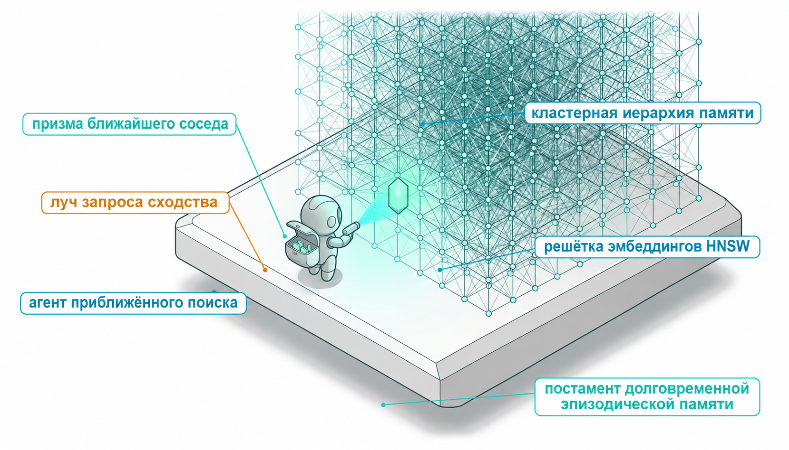
Назначение
Почему агент, способный найти всё, что он когда-либо сохранил, всё равно действует на основе неверных фактов?
Контекстное окно хранит рабочее состояние одного вызова модели, а сохранённое состояние внимания лишь ускоряет вычисления над тем же префиксом. Ни то, ни другое не определяет, что агент должен знать между сессиями, после перезапуска системы или на протяжённых горизонтах эксплуатации. Наделение агента постоянной памятью требует внешней архитектуры хранения, способной индексировать разнообразный опыт, извлекать релевантный исторический контекст, не загрязняя активные промпты, и разрешать противоречивые наблюдения во времени. Однако сам по себе семантический векторный поиск не даёт никаких временных гарантий. Устаревшие факты, заменённые версии кода и опровергнутые предпочтения набирают в косинусном сходстве столь же высокие баллы, как и актуальная достоверная информация. Следовательно, среда исполнения должна рассматривать каждую сохранённую запись как опровержимое утверждение, несущее свои происхождение, версии, к которым оно применимо, и явный путь к аннулированию. Надёжность зависит от того, держится ли постоянное состояние за явными правилами согласованности, а не от доверия модели самостоятельно примирять противоречивые исторические свидетельства.
Цели обучения
- Классифицировать постоянные записи по их источнику, доказательной роли и отношению к производным поисковым представлениям
- Сформулировать контракт поиска, ограничивающий доступ, возвращаемое содержимое, потребление ресурсов и требуемую свежесть данных
- Выбирать между заранее подготовленными свидетельствами, прямым чтением и поиском, управляемым моделью, — в зависимости от того, насколько задача называет потребность
- Подбирать методы поиска под информационную потребность, использовать нижнюю границу пропускной способности для отсева точных векторных сканирований по бюджету задержки и оценивать многошаговые свидетельства по бюджету сериализованных токенов
- Спроектировать политику записи в память — допуск, исправление, замещение, истечение и удаление — так, чтобы производные сводки не тиражировали отозванное утверждение
- Объяснить исключение с учётом версий и резервные механизмы, не путая удаление устаревших кандидатов с полной выборкой свежих данных
- Оценивать политики памяти между сессиями по результатам задач, поведению обновлений и совокупной стоимости ресурсов
6.1 Память за пределами одной сессии
Рассмотрим агента по ремонту (Четыре маяка — рабочие нагрузки), работающего над дефектом пула соединений в течение нескольких сессий. Когда начальная сессия завершается, следующий запуск должен восстановить рабочее состояние: дерево исходников-кандидата на ревизии r18, диагностированный сбой на r17, успешный прогон test_waiter_notified_on_return, незакрытые интеграционные проверки и рабочую заметку о точке возобновления. Ничто из этого состояния не переживает выход процесса внутри преходящего контекстного окна. Сохранение одного лишь итогового сводного сообщения теряет критически важные подтверждающие данные. И наоборот, удержание сырых транскриптов сообщений без явной области действия порождает путаницу. Агент, читающий неаннотированный журнал, легко примет прежний сбой на r17 за ошибку нового патча-кандидата.
Стандартные механизмы среды исполнения этот разрыв не перекрывают. Проектирование контекста выбирает среди информации, уже подготовленной для одного вызова модели, а система обслуживания инференса поддерживает состояние KV-кэша внимания исключительно ради ускорения этих вычислений. Хотя префиксный кэш может пережить отдельный запрос, он остаётся производной структурой ускорения для совместимого префикса промпта (принцип «Состояние внимания выводится из префикса токенов») независимо от носителя, на котором он хранится. Долговременная память решает другую системную задачу — сохранение информации, которая должна управлять решениями между разными вызовами. Надёжная система памяти должна явно определять, какие записи удерживать, как эффективно их индексировать и извлекать и как обновлять или аннулировать их при изменении внешних источников. В формальной рамке Пространство экспозиции H·S·A эти записи образуют долговременное состояние (
Построение постоянной памяти для агента требует решить три взаимосвязанные системные задачи. Во-первых, модель данных должна установить явные роли записей, строго разграничивающие внешние источники, наблюдения инструментов и заметки, созданные самим агентом, чтобы последующие сессии понимали, какие свидетельства поддерживает каждая запись. Во-вторых, системе нужен контракт поиска: независимо от механизма генерации кандидатов каждое чтение должно сообщать область запроса, допущенные версии снимка и завершился ли поиск штатно или деградировал под ресурсными бюджетами. В-третьих, подсистеме хранения нужен жизненный цикл записи, который допускает, обновляет, замещает, истекает и удаляет записи, распространяя эти изменения в нижестоящие индексы и сводки.
Глава рассматривает эти задачи в том порядке, в каком от них зависит чтение. Сначала — роли записей (Глава 6.2), поскольку любая последующая политика индексации, поиска и аннулирования зависит от знания того, какой авторитет несёт сохранённая запись. Затем контракт поиска (Глава 6.3) фиксирует, что должно указывать и сообщать каждое чтение, какой бы индекс ни стоял за ним, а выбор между заранее подготовленным и управляемым моделью поиском (Глава 6.4) решает, какой компонент формулирует запрос. Три раздела о методах сопоставляют структуры индексов с информационными потребностями: от имён и синтаксиса (Глава 6.5) через обученные представления и слитые ранжирования (Глава 6.6) к цепочкам связанных свидетельств (Глава 6.7). Путь записи (Глава 6.8) и аннулирование в хранилище (Глава 6.9) удерживают хранилище и его производные индексы достоверными при изменении источников, а заключительный раздел (Глава 6.10) судит о полной политике памяти по задачам, которые она помогает завершить между сессиями.
6.2 Постоянные записи
Когда агент по ремонту, работающий между сессиями, складывает файлы исходников репозитория, журналы тестов и собственные заметки о прогрессе в единый неразличимый пул памяти, последующая сессия легко примет неподтверждённую гипотезу или старый журнал тестов с r17 за актуальную истину о коде. Эти артефакты играют в ремонте разные роли. Исходники репозитория определяют, как выглядит код на данном коммите. Журнал выполнения фиксирует, как тест вёл себя при конкретных параметрах среды исполнения против этого коммита. Заметка о прогрессе фиксирует лишь то, где предыдущая сессия планировала возобновить работу. Стратегии поиска, валидация кэша и политики удаления зависят от того, насколько строго эти рабочие роли разведены.
6.2.1 Роли записей
Разделение ролей начинается с происхождения каждого артефакта. Версионируемые репозитории, производственные базы данных, системные конфигурации и профили пользователей существуют вне цикла исполнения агента, тогда как сырые наблюдения среды, трассировки вывода инструментов, сводные заметки о прогрессе и спекулятивные эвристики порождаются в ходе исполнения поверх этих внешних источников, а поисковые индексы выводятся из тех и других. Объединение всего этого под единой меткой «память агента» стирает границу между проверяемым источником и производным утверждением. Таблица 1 классифицирует эти записи по их архитектурной роли в цепочке свидетельств.
| Роль записи | Пример | Что должно сохранять последующее использование |
|---|---|---|
| Запись-источник | src/pool.py на указанной ревизии; заявленное пользователем предпочтение по расписанию |
Обозначенный источник, применимая версия или область действия и условия доступа |
| Журнал наблюдений/событий | Исход test_waiter_notified_on_return при зафиксированных источнике, тесте и конфигурации |
Что наблюдалось, когда и при каких условиях; пробелы в удержанной истории |
| Память, созданная агентом | Заметка о прогрессе, сводка сессии или предложенный урок по ремонту | Поддерживающие записи, неопределённость, предполагаемая область и политика исправления или удаления |
| Производный поисковый индекс | Поисковые записи по исходным файлам, журналам или заметкам | Какая генерация источника породила запись и как изменения влияют на её применение |
Источник записи (source of record) — обозначенное авторитетное происхождение конкретного утверждения. Например, дерево Git служит источником записи для содержимого файла на данном хэше коммита, а аутентифицированное сообщение пользователя — источником записи для его рабочих ограничений. Установление источника записи определяет, где должна валидироваться любое нижестоящее утверждение. Он даёт доказательное происхождение, но не корректность: коммит репозитория может содержать регрессию, а встроенный комментарий в коде — несанкционированные инструкции. Согласно принципу, что авторитет остаётся у источника (принцип «Полномочия остаются у источника»), авторитет описывает доказательное отношение между утверждением и его происхождением, но никогда — неограниченную выдачу полномочий. Когда сгенерированный агентом результат отклоняется от его источника записи, результат всё равно обязывает того, кто развернул агента, как явно сформулировал трибунал в разбираемом ниже деле. Для системы памяти дальнейший вопрос — что происходит, когда такой ответ сохраняется и читается вновь.
Практический случай 6.1: Чат-бот поддержки противоречит своей странице политики (2024)
Механизм: Чат-бот ошибочно сообщил Моффату, что он может немедленно купить билеты по обычному тарифу и подать заявление на возврат по тарифу утраты близких в течение 90 дней с момента выпуска билета, напрямую противореча опубликованной политике авиакомпании. Когда Моффат подал заявление, Air Canada отказала ему со ссылкой на статичную страницу политики. В Британском гражданском трибунале по разрешению споров Air Canada заявила, что чат-бот является независимым юридическим лицом, ответственным за собственные действия.
Последствия: Трибунал отклонил довод Air Canada, установив, что чат-бот — неотъемлемый компонент сайта авиакомпании и что авиакомпания несёт ответственность за всю информацию, опубликованную через него. Признав Air Canada ответственной за небрежное искажение фактов, трибунал обязал авиакомпанию выплатить 650,88 канадских долларов в качестве компенсации (разницу между полным тарифом и тарифом утраты близких), а также проценты и установленные законом сборы трибунала.
Исправление: Трибунал отверг утверждение, что клиенты обязаны самостоятельно примирять противоречащие указания на разных страницах сайта, постановив, что авиакомпания отвечает за всю информацию на своём сайте — статичную ли страницу предоставил чат-бот.
Системный урок: Сгенерированный ответ — производный артефакт, однако пользователи и правовые рамки трактуют его как авторитетное корпоративное обязательство. Инженерное средство — подать версионируемый источник записи в вызов модели и ограничить ответ утверждениями, которые этот текст поддерживает; это задача контракта поиска, разрабатываемого ниже. Беглость модели не даёт ни доказательной силы, ни правовой защиты.
Через таксономию Таблица 1 опубликованная страница политики выступала источником записи, а сгенерированный чат-ботом ответ — производным артефактом, отклонившимся от истины. Если система клиентской поддержки журналирует предыдущие диалоговые ходы для информирования будущих ответов, эти ходы становятся памятью, созданной агентом. Они документируют прошлые взаимодействия, но никогда не составляют организационную политику. Хранилище, сохранившее неверный ответ чат-бота и вернувшее его при следующем вопросе о тарифе утраты близких, повторило бы ошибку с кажущимся весом прецедента — если только запись не несла своей роли производного ответа и ссылки на версию политики, которую она претендовала отражать.
Журналы наблюдений фиксируют эмпирическую историю выполнения. Когда агент тестирует пул соединений, журнал выполнения со сбоем на ревизии r17 остаётся валидной диагностической историей и после того, как ревизия r18 устранит баг. Последующий успешный прогон подтверждает, что конкретный воспроизводитель завершился успешно при той самой конфигурации окружения. Журнал выполнения даёт первичное свидетельство того, что система наблюдала в ходе прогона, но не доказывает универсальную валидность какого-либо утверждения программы. Удержание этой исторической записи между перезапусками машин и сбоями воркеров требует гарантий долговременного постоянства.
↪ Долговременные реплицированные журналы, переживающие сбои воркеров и машин, разрабатываются в Журнал траектории.
Память, созданная агентом, синтезирует сырые наблюдения в структурированные артефакты для будущих шагов исполнения — в виде заметок на черновике, сводок сессий или усвоенных эвристик. Сжатие сырых трасс предотвращает повторные вычисления и экономит ёмкость контекстного окна. Однако суммаризация несёт собственные режимы отказа: сжатие может вырезать жизненно важные граничные условия или фабриковать причинные объяснения. Например, наблюдение, что целевой воспроизводитель прошёл на r18, строго обосновано журналом выполнения. Напротив, обобщённое утверждение, что таймауты пула соединений всегда проистекают из пропущенных уведомлений потоков, заявляет универсальное правило, которое единичный прогон теста не может подтвердить. Хранение неподтверждённого обобщения в постоянной базе данных порождает накапливающиеся ошибки в последующих шагах планирования.
Это расхождение отражает фундаментальное различие из когнитивной психологии (Tulving 1972 г.), которое переняли агентные архитектуры. Эпизодическая память запечатлевает дискретные, привязанные ко времени события, укоренённые в конкретных контекстах исполнения. Семантическая память хранит обобщённые знания, правила и абстракции, извлечённые из множества эпизодов. Процедурная память дополняет обе, сохраняя исполняемые рабочие процессы, скрипты инструментов и операционные регламенты. В терминах Таблица 1 журналы наблюдений и сводные эпизодов — эпизодические записи, порождённые уроки и справочные факты — семантические записи, а повторно используемые рабочие процессы ремонта — процедурные записи. В инженерной системе семантические и процедурные записи, следовательно, являются производными артефактами, чья эпистемическая валидность полностью зависит от точности и области действия лежащих в основе эпизодических записей.
Поисковый индекс служит вспомогательной структурой ускорения для поиска информации по уровням хранения. Хранит ли индекс постинги терминов, обученные векторные эмбеддинги или рёбра графа над исходными файлами, журналами и заметками агента (структуры, которые эта глава развивает по очереди), индекс лишь находит записи-кандидаты. Когда поисковый запрос совпадает с записью индекса, высокий балл сходства демонстрирует лексическую или семантическую близость к строке запроса, но не даёт никакой гарантии операционной применимости к текущей задаче. Операционная применимость зависит от того, соответствует ли упомянутая запись текущему состоянию системы, ревизии схемы и ограничениям окружения.
6.2.2 Жизненный цикл чтения и записи
Рассмотрим состояние агента по ремонту кода сразу после записи им ревизии r18. Если его векторный или ключевой индекс был сгенерирован по ревизии r17, поисковый запрос по src/pool.py вернёт непропатченный файл. Хотя эта запись остаётся точным историческим отражением r17, подача её в качестве текущего контекста заставит модель считать, что баг сохраняется, провоцируя избыточные или конфликтующие правки. Устаревание, от которого защищает аннулирование контекста, распространяется, таким образом, за пределы активного промпта — на уровни постоянного хранения, питающие последующие вызовы инференса.
↩︎ Аннулирование контекста — отзыв авторитета подготовленного наблюдения над текущим состоянием после изменения его источника — вводится в Инвалидация контекста.
Предвычисление поисковых индексов устраняет необходимость сканировать большие репозитории или истории выполнения во время инференса. Однако эта оптимизация несёт постоянную стоимость синхронизации. Каждое обновление исходного файла требует индексации нового содержимого и аннулирования или выселения устаревших эмбеддингов. Выполнение этих обновлений синхронно блокирует операции чтения или записи, а фоновая асинхронная индексация открывает окно лага, в котором индекс всё ещё отвечает по r17, хотя файл уже на r18. Запрос, пришедший в это окно, нуждается в явном правиле о том, что он может вернуть; такое правило поставляет Глава 6.9.2.
С той же проблемой согласованности в состоянии пользователя сталкиваются и диалоговые агенты. Пользователь, сказавший «Не назначай встречи до 10:00 утра», позже говорит «до 11:00 утра». Как текст эти две директивы почти идентичны, но по смыслу взаимоисключающие. Хранилище, которое сочтёт вторую дубликатом, сохранит устаревшее поведение, а то, которое допишет её, не отозвав первую, оставит противоречие в каждом последующем промпте. Чтобы отличать дополняющий факт от заменяющего, нужны явные метаданные жизненного цикла: их поставляет путь записи (Глава 6.8) и переносит во все производные индексы — вместе с валидацией, истечением по времени жизни (TTL) и каскадным удалением.
Сначала рассмотрим сторону чтения, потому что метаданные жизненного цикла защищают агента лишь тогда, когда их выдаёт каждое чтение. Поэтому интерфейс поиска (retrieval) обязан возвращать текст кандидата вместе со сведениями о происхождении, версии и полноте, от которых зависит безопасное исполнение.
6.3 Контракт поиска
Чтобы диагностировать зависшего ожидающего в пуле соединений, нужны и текущая реализация в src/pool.py, и телеметрия теста, связанного с test_waiter_notified_on_return. Поиск по истории репозитория может легко вернуть и провал теста в r17, и успешное воспроизведение в r18. Обе записи подлинны, но отвечают на разные вопросы: одна документирует дефект, вызвавший расследование, а другая оценивает кандидатный патч. Прежде чем выбирать структуру индекса или метрику близости, система должна определить, что требует следующее решение агента и какие гарантии на самом деле устанавливает возвращённая запись.
Определение 6.1: Контракт поиска
Контракт поиска задаёт запрашиваемую информацию, допустимый объём и ресурсные ограничения чтения, а также сведения о происхождении, применимости и завершённости, возвращаемые вместе с результатами.
- Значимость: он гарантирует, что ограниченный результат поиска остаётся интерпретируемым до того, как попадёт в следующий вызов модели. Неверно прочитанный или неверно атрибутированный результат наносит двойной удар по стоимости принятой задачи (Уравнение (2)): его токены расходуют бюджет промпта и стоимость инференса в ходе попытки, а вызванная им ошибочное решение снижает вероятность принятия.
- Отличие: алгоритмы ранжирования лишь оценивают и упорядочивают кандидатов по конкретной эвристике релевантности. Контракт поиска устанавливает границы авторизации, ограничения по версиям, бюджеты сериализации и явную семантику завершённости.
- Типичная ошибка: принять пустой результат или усечённое сканирование за окончательное доказательство того, что запрошенных данных не существует.
Этот контракт применяется единообразно — выполняет ли агент поиск по индексу, запрос к реляционной базе данных или прямое чтение файловой системы; он не предписывает ни конкретную структуру хранения, ни порог близости. Он распределяет работу между тремя сторонами (Рисунок 1). Среда исполнения задаёт границы запроса, служба поиска проверяет доступ и ведёт поиск в их пределах, а конверт результата сообщает статус, происхождение и ограничения до того, как среда исполнения подготовит какие-либо свидетельства для следующего вызова модели.
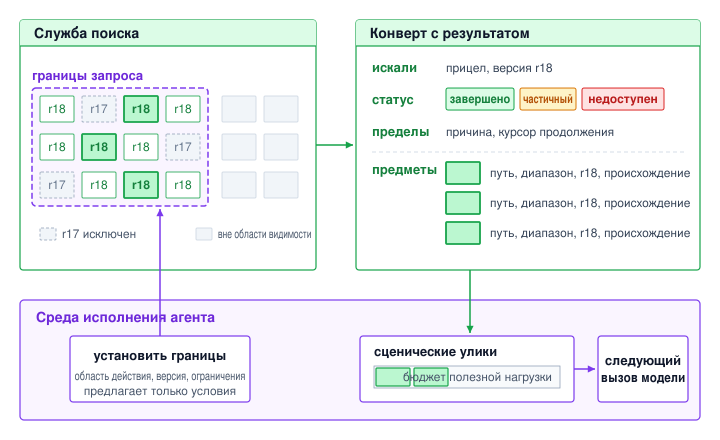
6.3.1 Ограниченный запрос
Необработанная информационная потребность вроде «найти логику уведомлений» недоопределяет операцию поиска. Она не уточняет, требуется ли вызывающему активное рабочее пространство, более ранняя ревизия Git или разница между ними. Она ничего не говорит о том, к каким репозиториям principal имеет доступ. Она также игнорирует, сколько токенов может вместить оставшееся контекстное окно вызывающего. Как обобщено в Таблица 2, представление поиска в виде ограниченного запроса отделяет эти операционные ограничения от механики самого индекса.
| Поле запроса | Значение в задаче починки | Устанавливаемая граница |
|---|---|---|
| Запрос или информационная потребность | Найти реализацию уведомления ожидающих или записанный результат воспроизведения | Запрошенное совпадение или наблюдение, но не обещание, что оно существует |
| Авторизованная область и principal | Назначенное рабочее пространство починки и личность, от имени которой выполняется чтение | Среда исполнения проверяет разрешённые пути и записи; одна лишь строка области доступ не даёт |
| Требование к версии или свежести | Прочитать r18, сравнить r17 с r18 или прочитать текущий исходник по указанной семантике снимка | Какое состояние может ответить на вопрос |
| Лимиты числа результатов и полезной нагрузки | Ограничить возвращаемые элементы и их сериализованное представление | Число и размер содержимого — отдельные лимиты |
| Лимиты исполнения | Дедлайн и поддерживаемые границы на сканирования, расширения и прочую поисковую работу | Когда прекратить ожидание или поиск и сообщить о незавершённой работе |
| Необязательные фильтры | Ограничить тип файла, вид символа или другие релевантные метаданные | Сузить информационную потребность, не подменяя авторизацию |
Требование к версии отличается от эвристики свежести по настенным часам. Запись индекса для ревизии r17 остаётся недействительной как текущий исходный код r18, даже если индексирующий воркер обновил её секунду назад. TTL по настенным часам лишь запускают периодическую переиндексацию, тогда как явные маркеры версий устанавливают, строго ли кэшированное представление соответствует своему исходному снимку. Когда служба поиска не может выполнить запрошенную версию из предвычисленного индекса, она должна либо перейти к авторизованному прямому чтению первичного хранилища, либо вернуть явный статус незавершённости. Этот компромисс раскрывается в Глава 6.9, когда сам индекс может отставать от источника.
Аналогично лимиты числа результатов, размера полезной нагрузки и вычислений ограничивают разные измерения потребления системных ресурсов. Десять полных исходных файлов занимают куда больше сериализованных токенов, чем десять докстрингов функций, но возврат даже одного элемента может потребовать сканирования миллионов записей-кандидатов. Лимит полезной нагрузки защищает нижестоящее контекстное окно вызывающего, бюджеты поисковой работы (такие как пределы обхода графа или сканирования постинг-списков) ограничивают вычисления службы поиска, а дедлайны исполнения не дают среде исполнения агента блокироваться бесконечно. Клиентские таймауты также должны передавать сигналы отмены в нижележащие механизмы хранения. Неотменённые фоновые запросы продолжают расходовать ресурсы бэкенда и завышают общую стоимость исполнения.
6.3.2 Конверт результата
Возврат голых текстовых фрагментов из поиска оставляет вызывающего неспособным определить, пришли ли совпадения из r17 или r18, и означал ли ноль совпадений, что символа нет в репозитории, либо что запрос прервался на полпути по индексу. Чтобы исходы поиска оставались интерпретируемыми, производственная служба поиска оборачивает совпавшие записи в конверт результата, указывающий фактически просмотренную область репозитория и ревизию снимка, терминальный статус исполнения и любые операционные ограничения, уточняющие результаты:
completeподтверждает, что заявленный алгоритм поиска был выполнен до конца в соответствии с его семантикой. Это механическая гарантия о выполненном поиске, а не утверждение, что найдены все релевантные факты.partialуказывает, что операция остановилась до исчерпывающего просмотра, явно фиксируя причину прерывания (например, истёкший дедлайн, недоступный раздел индекса или лимит выходной полезной нагрузки).unavailableсигнализирует, что подсистема поиска не смогла вернуть пригодные данные — из-за сетевого разделения, отказа авторизации или падения службы.
Когда операция даёт частичные результаты или усекает вывод ради лимитов полезной нагрузки, конверт предоставляет непрозрачный курсор продолжения, чтобы последующие ограниченные запросы могли возобновить постраничный обход, не выполняя весь запрос заново. Вместе с терминальным статусом этот курсор и конверт определяют, что среда исполнения может заключить при нулевом числе совпадений, — правило, которое в этой главе называется правилом отсутствия. Пустой результат доказывает отсутствие тогда и только тогда, когда он получен полностью завершённым исчерпывающим сканированием, и даже тогда — лишь в пределах просмотренной области и снимка ревизии. Завершённый буквальный поиск строки по репозиторию, показавший, что символ не встречается в ревизии r18, отвечает этому стандарту. Усечённое или частичное сканирование с нулём совпадений не доказывает ничего, поскольку цель может находиться в непосещённом разделе. Приближённый индекс (Глава 6.6.2) не даёт гарантии отсутствия, даже завершившись, потому что он намеренно пропускает большую часть пространства кандидатов ради экономии работы. Набор результатов, в котором нет нужной записи, может отражать этот пропущенный регион, а не отсутствие записи в корпусе.
На уровне элемента каждая возвращённая запись несёт структурированные метаданные вместе со своим сырым содержимым: постоянный URI или путь, диапазоны байт или строк, точный идентификатор исходного коммита или снимка и хэш содержимого возвращённых байт. Когда элемент представляет эмпирическое наблюдение — например, лог выполнения теста, — запись должна документировать конфигурацию среды выполнения, переменные окружения, ревизию теста и терминальный исход. Если элемент хранит производный урок или сводку, синтезированную агентом в более ранней сессии, его конверт должен ссылаться на первичные записи, обосновывающие этот вывод, и помечать его статус как производный выход модели. Если поисковая машина прикрепляет оценку релевантности, она должна назвать алгоритм, которым она получена (лексическая ранжирующая функция, векторная близость или обученный переранжировщик — каждый рассматривается далее в этой главе). Оценки ранжирования существуют на внутренней шкале своего алгоритма; системы не должны трактовать их как калиброванные вероятности.
status: complete
scope: {workspace: repair, principal: repair-agent, source_snapshot: r18}
items:
- role: source_record
path: src/pool.py
lines: [a, b]
revision: r18
content_hash: h18
score: {method: lexical_rank, value: s}
content: <slice of the return path>
- role: observation
test: test_waiter_notified_on_return
revision: r17
configuration: c17
outcome: failed
content: <recorded failure trace>В задаче починки пула соединений подготовленная полезная нагрузка может объединить фрагмент src/pool.py из ревизии r18 с трассировкой ошибки, записанной в ревизии r17, как в Список 1. Поля вне двух тел content расходуют бюджет полезной нагрузки наравне с самими телами. Трассировка r17 объясняет, почему была начата починка, но не даёт никаких свидетельств о поведении кандидата r18. Упаковывая каждую запись в явный конверт, подсистема поиска сохраняет эти различия применимости через границу между постоянным хранилищем и рабочим контекстом. Однако метки конверта фиксируют происхождение, не удостоверяя достоверность. Криптографический хэш содержимого проверяет лишь, что последовательность байт соответствует конкретному снимку. Он не проверяет фактическую корректность текста. Аналогично отнесение записи к пользовательскому вводу или памяти, записанной агентом, не даёт никаких административных полномочий инструкциям, встроенным в это содержимое.
↩︎ Правило области и недоверенный фрагмент установлены в Сохранение источника и охвата.
6.3.3 Подготовка свидетельств
Прямая подача верхних совпадений из поискового бэкенда в промпт позволяет некалиброванным оценкам близости, стёртым меткам версий и неучтённым метаданным-обёрткам переполнить контекстный бюджет или протащить устаревший фрагмент r17 в решение по r18. Поэтому решает, какие записи попадут в нижестоящий промпт, среда исполнения агента — а не поисковый бэкенд и не сырая оценка ранжирования: она отбирает свидетельства для ближайшего решения, сохраняет метки источника и версии, нужные для интерпретации каждого элемента, и учитывает полный сериализованный след в токенах. Подготовка — это место, где замыкание инвариантов (принцип 1) достигает границы прочного чтения. Граница ниже модели механическая, потому что допускает не модель и не ранжировщик, а правило среды исполнения. Метки версий, которые сохраняет среда исполнения, — это те свидетельства, которые позже нужны проверке принятия, чтобы отличить наблюдение r17 от наблюдения r18. Но даже после таких проверок извлечённые записи остаются недоверенными фрагментами при получении из локального репозитория: сериализация, отделяющая их от системных инструкций, не может остановить модель от следования тексту, встроенному в тело записи, — это известная угроза промпт-инъекции.
↪ Косвенная промпт-инъекция, доставляемая через извлечённые документы и другие наблюдения, которые читает агент, раскрыта в Входные точки инъекции в промпт.
Точный учёт полезной нагрузки должен измерять весь сериализованный конверт — включая теги-обёртки, пути к источникам, идентификаторы версий и заголовки статусов — наряду с сырыми телами текста. Недооценка этих структурных накладных расходов ведёт прямо к исчерпанию контекста. Счётчик токенов в ноутбуке 6.1 показывает, как накладные расходы метаданных меняют число полных записей, которые агент может подготовить в пределах фиксированного промпт-бюджета.
Инженерный расчёт 6.1: Освобождение места для найденных свидетельств
Математика: лимит на поиск составляет
Максимальное число полных записей, которое помещается, — 10. Размещение этих записей вместе с конвертом потребляет
Наивная политика расчёта, учитывающая только тела документов без служебных данных, допустила бы 12 записей. Однако при сериализации с метаданными и конвертами такие записи требуют 7,040 токенов, превышая выделенный бюджет поиска на 896 токенов.
Системный вывод: метаданные и обрамление конверта расходуют ёмкость контекста ничуть не меньше, чем тела документов. В этой конфигурации каждая запись отдаёт 64 из своих 576 токенов под провенанс, из-за чего эвристика «только тело» перегружает промпт на 2 записей. Среда исполнения должна сначала зарезервировать ёмкость под выходные токены и глобальный конверт, а затем допускать
Поскольку субтокенизаторы (например, кодирование байтовых пар, BPE) объединяют токены через границы строк, токенизация фрагментов текста по отдельности и суммирование их счётчиков дают неточный итог. Среды исполнения должны измерять длины токенов на финальной, полностью сериализованной структуре промпта с помощью токенизатора целевой модели. Когда критическая запись превышает оставшийся бюджет, среда исполнения не должна молча обрезать текст. Вместо этого ей следует подготовить синтаксически связный фрагмент с явными маркерами усечения, отложить элемент до следующего прохода поиска или вернуть непрозрачный дескриптор, который модель сможет разрешить по запросу.
Каждый подготовленный токен также влечёт конкретные накладные расходы движка инференса сверх занятия места в окне контекста. Найденный контекст должен быть обработан через вычислительно ёмкую фазу префилла модели, а затем закреплён в памяти ускорителя в виде тензоров кэша ключ-значение (KV-кэш) на весь цикл генерации или окно удержания префиксного кэша. Чем больше записей подготовлено, тем больше объём токенов, который обслуживающий движок должен обработать и удерживать, хотя итоговая задержка префилла зависит от модели, повторного использования префиксов и конфигурации обслуживания. Каждый удерживаемый токен учитывается в лимите резидентной вместимости KV-пула обслуживающего узла, поэтому щедрая политика подготовки сокращает число траекторий, которые узел может обслуживать параллельно.
↩︎ Размер состояния KV-кэша на одну последовательность и то, как он ограничивает число последовательностей, которые узел может обслуживать параллельно, установлены в След удерживаемого состояния внимания.
Контрольная точка 6.1: Интерпретация ограниченного результата
Каждый вопрос представляет исход поиска; решите, какие эксплуатационные выводы он позволяет сделать.
Контракт поиска устанавливает эксплуатационные границы, требования к провенансу и лимиты полезной нагрузки для каждого чтения, но оставляет открытым архитектурный вопрос: какой компонент формулирует запрос. Среда исполнения может предсказать нужные свидетельства и подготовить их заранее до вызова модели, а может снабдить агента инструментами поиска, чтобы он интерактивно исследовал хранилище по мере поступления промежуточных открытий.
6.4 Агентный поиск
Предсказать все файлы, которые понадобятся агенту по исправлению до вызова модели, — значит либо забить промпт нерелевантным кодом, либо пропустить зависимость от вспомогательного модуля, становящуюся видимой лишь после чтения первого кадра стека. Заставлять же модель интерактивно искать файлы, уже названные в задаче, — значит тратить целый ход инференса на предсказуемый поиск. Две архитектуры поиска делят эту работу по-разному. В архитектуре с предподготовкой среда исполнения предсказывает, какие артефакты понадобятся (например, src/pool.py, tests/test_pool.py и трассировку стека из предыдущего запуска), и внедряет их прямо в промпт до начала выполнения модели. В агентной архитектуре среда исполнения снабжает модель инструментами ограниченного текстового поиска, чтения файлов и навигации по символам, позволяя агенту находить логику уведомлений, изучить тестовый каркас и проследить межфайловые ссылки по мере промежуточных открытий. Обе архитектуры работают над одними и теми же системами хранения и разделяют одинаковые границы безопасности. Они различаются тем, когда разрешается информационная потребность и какой компонент формулирует поисковые запросы.
Предподготовка реализует стандартную генерацию, дополненную поиском (RAG), где хост-система выбирает внешние документы и упаковывает их вместе с промптом до начала инференса (Lewis и др. 2020 г.). Напротив, агентный поиск делегирует формулирование запросов самой модели в цикле выполнения, чередуя наблюдения среды с последующими шагами рассуждения и действия (Yao и др. 2023 г.). Автономные системы, спроектированные для инженерии программного обеспечения в масштабе репозитория (Jimenez и др. 2024 г.), опираются на этот интерактивный цикл, поскольку команды поиска и навигации, сформированные для инспекции кода, оказываются куда более гибкими, чем единственный статический набор из top-
Этот компромисс задаёт рабочий диапазон каждой политики. Когда требуемые файлы известны из описания задачи или структуры проекта, предподготовка их в начальном промпте избавляет от траты целого хода модели на обнаружение. Когда падающий ассерт в tests/test_pool.py называет внутренний хелпер, определение которого находится в другом модуле, управляемый моделью поиск позволяет этому промежуточному наблюдению сформировать следующий запрос вместо того, чтобы заранее угадывать граф транзитивных зависимостей. Однако интерактивное исследование привносит собственные режимы отказа: агент может гнаться за бесперспективными следами, выдавать избыточные поиски по уже знакомым каталогам или прекратить исследование до сбора достаточных свидетельств для проверки исправления.
Прежде чем вводить вспомогательный индекс, например инвертированный текстовый индекс или векторное хранилище, инженеру следует провести бенчмарк против базовой линии с живым источником. Ограниченные поископодстрочные операции и прямые чтения файлов инспектируют целевое рабочее пространство непосредственно на диске, не вводя внешнего индекса, который может отставать от текущих правок. Когда описание проблемы уже указывает точные имена файлов или буквальные строки ошибок, этих примитивов живого источника часто достаточно, чтобы покрыть все потребности агента в поиске. Однако прямой доступ к файловой системе несёт свои системные компромиссы. Живые чтения наблюдают ту версию файла, которая существует в точный момент исполнения. Если параллельные процессы изменяют рабочее пространство, отдельные чтения, выполненные в последовательных ходах, могут перемежаться с правками и наблюдать несогласованные снимки. Более того, сырой буквальный поиск находит совпадения символов без семантического осознания, не отличая активное определение символа от устаревшего комментария или постороннего сообщения журнала. Вспомогательный индекс оправдывает занимаемый объём памяти, время построения и накладные расходы синхронизации только тогда, когда окупает их. Он измеримо амортизирует затраты на повторяющееся сканирование на длинных траекториях, разрешает несовпадения словаря через семантические эмбеддинги или ускоряет обход структурных отношений, таких как графы вызовов, полученные из абстрактных синтаксических деревьев (AST). Оценка должна прямо отнести стоимость построения и обновления индекса против его выгод во время запросов. Глава предъявит этот счёт в своём конце, когда лексические, плотные и графовые индексы будут готовы (блокнот 6.5).
Когда агент исследует свою среду, среда исполнения может оптимизировать выполнение запросов через параллелизм. Один ход модели может породить несколько независимых вызовов инструментов, которые среда исполнения батчирует или выполняет параллельно в потоках. Блокироваться для последовательного разрешения должны только запросы, строго зависящие от более ранних наблюдений. Таблица 3 суммирует ключевые компромиссы между предподготовкой средой исполнения и поиском, управляемым моделью.
| Свойство | Предподготовка средой исполнения | Поиск, управляемый моделью |
|---|---|---|
| Выбор запроса | Политика среды исполнения выбирает свидетельства до вызова модели | Модель формулирует запросы динамически на основе предыдущих наблюдений |
| Оптимальный сценарий | Вероятные потребности в свидетельствах предсказуемы заранее | Промежуточные результаты диктуют, какой вопрос задать следующим |
| Вычислительные накладные расходы | Задержка поиска и стоимость подготовки до вызова | Задержка поиска и дополнительные ходы инференса на уточнение запроса |
| Характерный отказ | Пропущенные транзитивно импортированные зависимости или раздувание контекста | Погоня за непродуктивными путями или преждевременное завершение поиска |
| Гарантия свежести | Определяется версией источника и контрактом чтения при подготовке | Определяется тем же контрактом чтения во время выполнения инструмента |
| Управление ресурсами | Ограничено таймаутами подготовки и ёмкостью окна контекста | Ограничено лимитами на вызов и бюджетами шагов на траекторию |
При обеих политиках среда исполнения сохраняет власть над границами безопасности и потреблением ресурсов. Модель выступает строго как недоверенный генератор запросов. Она может предложить более узкий путь поиска, подать строки запросов или запросить конкретные фильтры, но она никогда не может расширить авторизованное рабочее пространство, принять другую личность принципала или поднять собственные потолки ресурсов. Среда исполнения обеспечивает эти границы на интерфейсе инструментов. Схемы вызова инструментов определяют и ограничивают поддерживаемые параметры запроса, тогда как результаты выполнения инструментов передают агенту предупреждения об усечении, лимиты ресурсов и токены продолжения.
↪ Схемы интерфейса инструментов, ограничивающие параметры запроса, которые может подать модель, развиты в Схемы интерфейса инструментов.
В производственных системах эти две стратегии часто сливаются в многоуровневую гибридную политику. Среда исполнения предподготавливает компактную схему рабочего пространства, архитектурное резюме или устойчивые пользовательские предпочтения прямо в начальном окне контекста, давая модели немедленную структурную опору. Затем агент выдаёт адресные вызовы инструментов, чтобы изучить реализации конкретных функций или трассировки тестов только тогда, когда эти детали становятся необходимыми. Оценка такой гибридной конструкции требует балансировать заблаговременные накладные расходы на токены предподготовки против задержки инференса и расхода токенов на избегнутые ходы с инструментами.
Выбор между прямым чтением, предподготовкой и адресным поиском следует из того, какую часть информационной потребности называет сама задача. Когда задача называет свои цели, например src/pool.py или закреплённую заметку, прямое чтение подготавливает ровно эти записи и не тратит ходов на ранжирование или исследование. Когда нужные свидетельства предсказуемы, но не названы, например тесты, обычно сопровождающие модуль, предподготовка захватывает их за один шаг ценой части нерелевантных токенов. Когда каждый нужный элемент можно найти только по предыдущему, как когда падающий ассерт называет хелпер, определение которого называет блокировку, никакой предподготовленный набор не может предвосхитить цепочку, и поиск, управляемый моделью, платит один ход модели за каждую зависимую переступку. Гибрид засеивает первый шаг предподготовкой или прямым чтением и оставляет остальные шаги поиску. Какой бы компонент ни формулировал запрос, то, что возвращается, зависит от механизма сопоставления за чтением — лексического сопоставления, выученного сходства или структурного обхода — и каждый механизм отвечает на иной род информационной потребности.
6.5 Лексический и структурный поиск
Когда агент по исправлению исследует зависшего официанта, он сталкивается с различными информационными потребностями: найти tests/test_pool.py, найти ссылки на test_waiter_notified_on_return и изолировать функцию, окружающую подозрительный оператор синхронизации. Хорошо спроектированный контракт поиска не заставляет все эти разные задачи проходить через один механизм. Известный путь к файлу требует лишь прямого чтения файла. Конкретный идентификатор требует буквального текстового поиска или поиска по символам. Широкое описание симптома требует ранжирования нескольких фрагментов-кандидатов, прежде чем агент сможет решить, какие исходные файлы заслуживают инспекции.
6.5.1 Точный поиск и лексическое ранжирование
Когда агент по исправлению уже знает путь, такой как tests/test_pool.py, точный поиск по пути извлекает этот объект напрямую из авторизованного снимка репозитория, тогда как буквальный текстовый поиск токена вроде notify или waiter сканирует точные последовательности символов по объявленным правилам регистра и границ. Однако когда буквальный поиск по репозиторию возвращает десятки совпадений, охватывающих определения, комментарии, строки импорта и архивированные журналы отказов, ни точный поиск, ни неранжированный поиск подстрок не может сказать вызывающему, какой файл важнее всего, или упорядочить множество кандидатов.
Чтобы поддерживать повторяющиеся лексические запросы по большим корпусам без сканирования каждого байта на диске, системы поиска опираются на инвертированный индекс (Zobel и Moffat 2006 г.). Индекс отображает каждый различный терм в список постингов, содержащий каждый документ, где терм встречается. Помимо идентификатора документа каждый постинг обычно хранит частоту терма в документе и смещения позиций. То, как исходный текст отображается в постинги, полностью зависит от анализатора индекса. Анализатор определяет границы токенов: сохраняет ли он полные токены идентификаторов, разбивает ли идентификаторы snake_case и camelCase, нормализует ли регистр букв или отсекает словоизменительные аффиксы через стемминг. Следовательно, ранжированное совпадение по проанализированному идентификатору ведёт себя иначе, чем точное совпадение по сырой строке. Когда агенту требуется точное буквальное попадание, он должен либо запросить неанализируемое поле точного совпадения, либо напрямую верифицировать возвращённый фрагмент источника.
Когда запрос соответствует десяткам или сотням кандидатов, ранжирование определяет, какие документы попадут в ограниченное окно контекста агента. Скоринговая функция BM251 балансирует три фактора: редкость терма по корпусу,2 сублинейное насыщение частоты терма внутри каждого кандидата и нормализацию по длине документа (Robertson и Zaragoza 2009 г.):
Здесь
Пример 6.1: Более высокий лексический балл — это решение о ранжировании
Анализ: короткий кандидат содержит 80 термов и 1 вхождение терма запроса. Длинный кандидат содержит 4,000 термов и 6 вхождений. Длина-зависимый множитель
Урок для систем: ранжирование упорядочивает кандидатов для просмотра. Если короткий кандидат — комментарий, а длинный содержит реализацию, агенту всё равно нужен анализ исходного кода или структурная информация, а выбор целых файлов вместо функций в качестве документов изменил бы оба балла.
6.5.2 Структурные свидетельства
Лексический поиск по notify находит токен и внутри src/pool.py, и внутри архивного журнала отказа r17, но не может вернуть всю объемлющую функцию или отследить, какой тест вызывает метод, который обращается к notify(). Структурный поиск восстанавливает организацию программы: объемлющую функцию, объявления типов, лексические области видимости и идентификаторы в выражениях вызова. Парсер переводит исходный текст в абстрактные синтаксические деревья с явными диапазонами (spans), а разрешение имён и семантический анализ устанавливают направленные связи между определениями и местами вызова. Если разбор выражения вызова идентифицирует место вызова синтаксически, то для того, чтобы определить, какая конкретная реализация выполняется в рантайме, требуется межпроцедурный анализ.
То, какую часть цепочки «вызывающий — вызываемый» восстановит структурный индекс, зависит от семантики языка, зависимостей и конфигурации сборки. Динамическая диспетчеризация, рефлексия, генерируемый код и межпроцессные вызовы часто ускользают от статического разрешения. Поэтому в структурном индексе отсутствующее ребро указывает на пробел в статическом покрытии, а не на недостижимый путь, а статическое ребро вызова фиксирует потенциальный вызов, а не выполненный. Рисунок 2 сопоставляет два представления на примере починки пула соединений: тогда как лексический индекс отображает notify в плоские частоты термов как в src/pool.py, так и в r17.log, структурный индекс связывает test_waiter_notified_on_return с методом возврата пула и далее с _available.notify(), помечая динамические вызовы, чьи цели остались неразрешёнными.
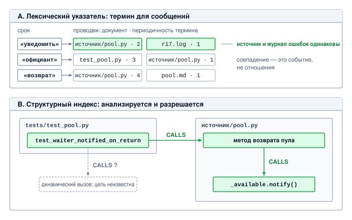
Таблица 4 разделяет вопросы, на которые отвечают эти методы. Лексические индексы могут нести метаданные о путях и символах, но одно лишь текстовое совпадение не устанавливает никаких семантических связей.
| Информационная потребность | Подходящий стартовый метод | Что устанавливает результат |
|---|---|---|
| Прочитать известный путь или найти литеральный идентификатор | Прямое чтение исходника или объявленный поиск точного совпадения | Запрошенное содержимое или вхождения внутри искомого диапазона и версии |
| Найти предположительно релевантные документы по термам запроса | Лексическое ранжирование, например BM25 | Порядок кандидатов при данном анализаторе, границы документов и правило подсчёта балла |
| Найти объемлющую функцию или разрешённые ссылки | Синтаксический или семантический индекс с объявленным покрытием | Разобранные границы или выведенные анализом связи, а не полное поведение в рантайме |
6.5.3 Область поиска
Когда поисковый сервис выбирает кандидатов с наивысшим рангом глобально по всему репозиторию и лишь затем отбрасывает результаты вне src/pool.py и tests/test_pool.py (пост-фильтрация), он легко может вернуть пустое множество, хотя подходящие совпадения находятся дальше вниз по глобальному ранжированию. Ограничение первичного зонда файлами src/pool.py и tests/test_pool.py фокусирует свидетельства и снижает шум только тогда, когда фильтрация и ранжирование согласованы, а интерфейс поиска явно сообщает об этой ограниченной области. Последующий зонд может расширить область, чтобы исследовать вызывающих по всему репозиторию. Ограничение множества кандидатов до финального подсчёта баллов (пре-фильтрация) позволяет избежать потерь при пост-фильтрации, как и продолжение обхода списков до заполнения запрошенной квоты отфильтрованных документов. Если запрос прерывается из-за лимита бюджета или задержки (latency), результат остаётся частичным.
Выбор порядка вычислений — это оптимизационное решение по стоимости, аналогичное выбору путей доступа в оптимизаторах реляционных СУБД (Selinger и др. 1979 г.).3 Это решение балансирует селективность фильтра против редкости термов запроса. Селективный фильтр — например, выделяющий два файла в репозитории из тысяч — благоприятствует пре-фильтрации документов-кандидатов и подсчёту баллов BM25 только для выживших. Напротив, широкий фильтр в паре с редким идентификатором благоприятствует сначала подсчёту баллов, поскольку список для редкого терма и так короток, — при условии, что поисковый движок продолжает сканирование, пока не наберётся достаточно подходящих результатов. Этот компромисс возникает снова, с ещё более острыми эксплуатационными рисками, при поиске по графам векторной близости (Глава 6.6).
6.5.4 Несовпадение словарей
В начале расследования агенту может быть известен лишь наблюдаемый симптом — например, «соединение возвращено, но другой вызывающий продолжает ждать», — сформулированный словами, которых в исходном коде нет, поэтому точный и структурный поиск не возвращает ничего. Эта проблема — несовпадение словарей (vocabulary mismatch): авторы и пользователи кода описывают одни и те же понятия разными словарями (Furnas и др. 1987 г.). Эвристические приёмы вроде разбиения идентификаторов, расширения синонимами или переформулировки запроса могут вернуть часть лексических совпадений. Как только поисковое исследование выявляет конкретное имя теста, буквальный поиск гораздо прямее дальнейшего концептуального поиска. Когда лексические эвристики всё ещё оставляют множество кандидатов недостаточным, агенту нужно представление, отображающее описательную прозу в иначе сформулированные реализации исходного кода, а также гибридные ранжировщики, комбинирующие плотное семантическое сходство с точностью точного лексического поиска, не принимая сходство за верификацию.
6.6 Плотный и гибридный поиск
Когда агент расследует отчёт об ошибке, описывающий бесконечно висящего вызывающего, лексический поиск по репозиторию легко ранжирует критический путь возврата в src/pool.py низко или вовсе пропускает его. Значимая строка выполняет notify(), но отчёт описывает вызывающего, который продолжает ждать. Плотный поиск (dense retrieval) предоставляет дополнительный механизм генерации кандидатов, используя обученные представления, чтобы сопоставить запрос с записями, разделяющими общий смысл, а не буквальные токены. Поскольку плотный и лексический методы ошибаются в разных местах, производственные системы обычно запускают оба и объединяют их ранжирования (Глава 6.6.3).
6.6.1 Плотный поиск
Запуск нейронной модели по каждому файлу репозитория при каждом поиске сделал бы поиск самым медленным шагом в цикле агента. Плотный поиск избегает подсчёта баллов по корпусу на каждый запрос, кодируя запрос и каждую доступную для поиска запись в виде векторов в общем геометрическом пространстве и ранжируя записи по векторному сходству.4 В архитектуре bi-encoder записи кодируются офлайн до прихода запроса, так что в момент запроса онлайн остаётся кодировать только сам запрос (Karpukhin и др. 2020 г.). Это разделение убирает тяжёлый эмбеддинг-инференс с критического пути запроса. Однако офлайн-кодирование создаёт постоянную обязанность по сопровождению: новые или изменённые записи требуют генерации свежих векторов, а обновление или дообучение (fine-tuning) базового энкодера инвалидирует весь индекс, что требует полного пере-эмбеддинга корпуса.
Метрика расстояния определяется взаимодействием конфигураций энкодера и индекса. Например, поиск по скалярному произведению математически идентичен косинусному сходству, когда векторы нормированы на единицу (
В задаче починки ПО эта геометрическая близость перекрывает разрыв словарей между отчётом об ошибке и кодом возврата с уведомлением, давая кандидата для просмотра, а не доказательство дефекта, но та же семантическая абстракция размывает тонкие синтаксические различия, от которых зависит исполнение. В src/pool.py путь возврата вызывает self._available.notify(), процедура остановки вызывает self._available.notify_all(), а захват вызывает self._available.wait(timeout). Все три инструкции разделяют одну условную переменную, контекст модуля и концептуальный словарь синхронизации потоков. Поэтому при запросе о разблокировке потока энкодер часто отображает все три в соседние точки векторного пространства. Их операционная семантика при этом совершенно различна: одна будит одного ожидающего, другая — всех ожидающих, а третья блокирует. Точный лексический поиск по notify( мгновенно изолирует место вызова, а BM25 присваивает редкому идентификатору высокую обратную документную частоту (IDF). Системная задача, следовательно, — определить, какой механизм поиска выдаёт точное свидетельство, которое требует рабочая нагрузка.
6.6.2 Точный и приближённый векторный поиск
Подсчёт балла вектора запроса против каждого вектора в нефильтрованном хранилище на миллионы записей выкачивает гигабайты эмбеддингов из памяти при каждом поиске. Построение приближённого индекса, напротив, — лишняя сложность, когда фильтр по арендатору или файлу уже сузил подходящее множество до нескольких тысяч векторов. Точное векторное сканирование подсчитывает балл каждого вектора в допустимом множестве поиска по выбранной метрике расстояния. Оно служит эталонной базой для измерения того, что упускает приближённый поиск, и остаётся практичным способом обслуживания, пока допустимое множество кандидатов достаточно мало, чтобы выкачать его в пределах бюджета задержки.
Ресурсные требования точного сканирования напрямую следуют из арифметики размерностей и не зависят от конкретной аппаратной архитектуры. Пусть
↪ Модель «крыши» (roofline) и точка хребта, отделяющая задачи, ограниченные пропускной способностью, от задач, ограниченных вычислениями, развиты в Асимметрия стоимости между префиллом входа и генерацией выхода.
Инженерный расчёт 6.2: Почему точный векторный скан ограничен пропускной способностью памяти
Математика: умножим количество векторов на размерность и ширину компонента:
Необработанные векторы занимают 15.36 GB. Считая два FLOP на операцию умножения-сложения, получаем
Системный вывод: интенсивность точного прохода жёстко задана шириной компонента, поэтому добавленная арифметика его не ускоряет, а более высокий хребет ускорителя оставляет его ограниченным пропускной способностью и там. Рычаги — меньше байт на вектор (сжатие) и меньше затрагиваемых векторов (более узкое допустимое множество или приближённый индекс). Предел по полосе пропускания отсеивает точные проходы, которые не укладываются в бюджет поиска. Когда этот предел соблюдается, бенчмаркьте полный запрос, включая кодирование запроса, выборку top-
Предел по пропускной способности памяти, стоящий за задержкой, ограниченной выводом (принцип «Задержка, ограниченная выводом»), вновь проявляется в поиске (retrieval), потому что точный проход, как и шаг декодирования, выполняет лишь несколько операций на каждый перемещённый байт. Та же арифметика показывает, когда точный проход остаётся правильным выбором. Когда селективные фильтры по метаданным сужают пространство поиска до тысяч допустимых векторов, точный проход перемещает мегабайты, а не гигабайты, снижая потоковый предел до долей миллисекунды без операционных накладных расходов сопровождения графа или кодовых книг квантизации.
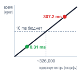
Потоковый предел точного прохода растёт с числом допустимых векторов; бюджет поиска задаёт оптимистический потолок кандидатов.
Когда множества кандидатов вырастают до миллионов векторов, а запросы должны возвращаться в жёстких пределах задержки, сканирование всего корпуса становится непозволительным. Поиск приближённых ближайших соседей (ANN)5 обменивает математическую точность на снижение задержки и трафика памяти на порядки, прореживая пространство поиска ценой изредка пропущенных истинных ближайших соседей. Системы сокращают трафик памяти одним из двух способов: обходя граф близости, чтобы вычислить лишь крошечную долю векторов, или разбивая пространство и сжимая представления векторов кодами квантизации.
Индекс иерархического навигуемого маломерного графа (HNSW) организует многомерные векторы в многослойный граф близости (Malkov и Yashunin 2018 г.). Слой 0 содержит каждый вектор набора данных. Каждому вставляемому вектору также назначается максимальный слой
Построение графа HNSW требует выполнить этот слоистый поиск для каждого входящего вектора и установить двунаправленные связи с его ближайшими соседями в каждом слое. Такая топология графа влечёт существенные накладные расходы памяти сверх самих векторов. С удалениями дело обстоит ещё сложнее: разрыв узла без восстановления путей рёбер между его соседями рискует разрезать граф и оставить векторы по другую сторону отрезанными. Поэтому продукционные системы помечают удалённый узел надгробием — маркером исключения, скрывающим его из результатов, пока его связи остаются на месте; в Глава 6.9 рассматривается, как цена этого компромисса накапливается.
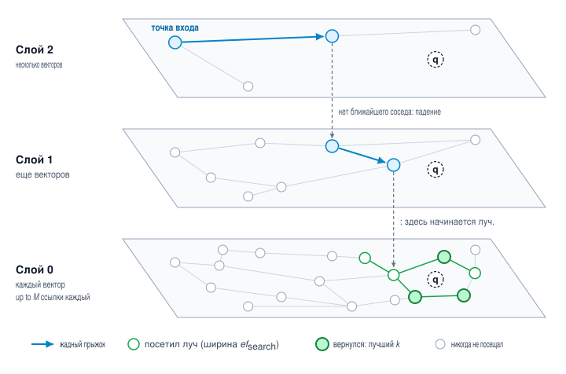
Вместо навигации по графу над векторами полной точности инвертированный файловый индекс в сочетании с продуктовой квантизацией (IVF-PQ) сокращает трафик памяти, разбивая векторное пространство и с потерями сжимая хранимые представления (Jégou и др. 2011 г.). У него есть офлайн-конвейер сборки и онлайн-конвейер запросов (Рисунок 4). При построении индекса грубые
Далее продуктовая квантизация сжимает каждый хранимый вектор. Она разбивает
Уравнение 2 превращает ограниченный пропускной способностью скалярный продукт из
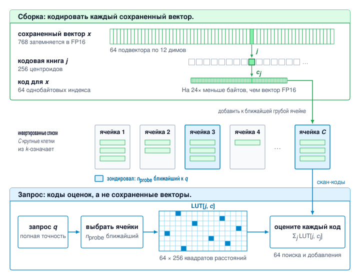
Оценка обоих дизайнов для корпуса из 10 миллионов векторов ноутбука точного прохода показывает, сколько памяти стоит каждый из них. При 32 восьмибайтовых связей на узел граф HNSW добавляет 2.56 GB топологии рёбер к 15.36 GB векторов. Поскольку жадная маршрутизация обходит произвольные связи графа, паттерны доступа к памяти доминируются зависимыми случайными чтениями, требуя, чтобы и граф, и векторы оставались резидентными в памяти. Продуктовая квантизация с 64 подвекторами по 12 измерений хранит 0.64 GB кодов — в 24× меньше, чем векторы FP16, — а её таблица поиска на запрос занимает лишь 65.5 KB. Таблица 5 сопоставляет три дизайна рядом.
| Свойство | Точный проход | IVF-PQ | HNSW |
|---|---|---|---|
| Работа на запрос | Каждый допустимый вектор | Расстояния вдоль жадного пути и луча ширины |
|
| Резидентные байты (ноутбук) | 15.36 GB | 0.64 GB кодов плюс центроиды и кодовые книги | 17.92 GB векторов и связей |
| Точность расстояния | Точная в заданной метрике | Приближённая; повторная оценка короткого списка её восстанавливает | Точное для каждого посещённого вектора; промахи — из непосещённых |
| Регулятор полноты | Не требуется | ||
| Вставка и удаление | Дописывание; удаление исключением | Дешёвое дописывание; центроиды и кодовые книги стареют при дрейфе корпуса | Вставка выполняет поиск и перевязывает соседей; удаление оставляет помеченный узел |
| Доступ к памяти | Последовательный поток, ограничен полосой пропускания | Короткие последовательные сканы малых кодов | Зависимые случайные чтения, по одному на прыжок |
Выбор среди этих индексных структур требует их оценки применительно к конкретным объёмам записей, распределениям запросов и бюджетам задержки, с которыми сталкивается агент. Две метрики оценки отвечают здесь на разные вопросы. Полнота (recall) относительно точного сканирования измеряет алгоритмическую верность математической метрике расстояния, тогда как сквозной успех задачи измеряет, содержат ли извлечённые записи необходимые причинные свидетельства для достижения цели агента.
Опасность фильтрации из лексического поиска (Глава 6.5.3) возвращается здесь в более острой форме, поскольку фильтры области действия создают большее трение для графового индекса, чем для инвертированных списков публикаций. При лексическом поиске пересечение списка публикаций с битовой картой допущения отсекает неавторизованные документы, не меняя способ обхода остальных документов. В графе HNSW ограничение поиска во время обхода (предфильтрация) заставляет луч перемещаться исключительно по допустимым узлам. Если граница арендатора или маска файлового пути изолирует области графа, жадный обход застревает в локальном минимуме, когда все исходящие ссылки ведут к замаскированным узлам. Поиск завершается преждевременно и возвращает неполные результаты, даже если весьма релевантные допустимые узлы существуют сразу за маскированным барьером. Напротив, фильтрация после неограниченного поиска (постфильтрация) рискует вернуть пустое множество всякий раз, когда первые
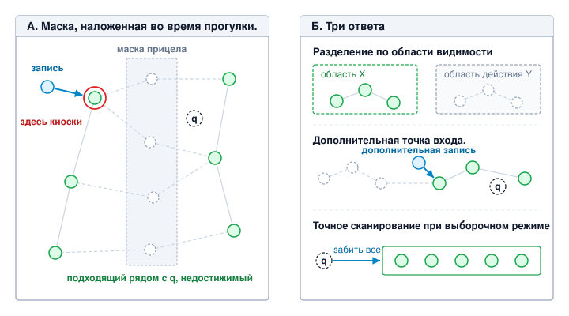
6.6.3 Слияние рангов и переранжирование
Совместное использование лексического поиска и плотного поиска покрывает слепые зоны каждого из методов, но наивное объединение их выходов не работает по двум причинам. Добавление неограниченных оценок BM25 напрямую к косинусным сходствам в r17 с его исправленным аналогом r18 или считает идентичный код в другом арендаторе авторизованным локальным свидетельством. Поэтому производственные системы, объединяющие несколько механизмов генерации кандидатов через гибридный поиск, должны разрешать идентичность кандидатов по области действия арендатора, исходному пути, идентификатору коммита или версии и координатам фрагмента до слияния списков.
Поскольку лексические оценки и оценки плотного сходства лежат на несопоставимых шкалах, прямая нормализация или сложение сырых оценок вносит нестабильность калибровки. Взаимное слияние рангов (reciprocal rank fusion, RRF) обходится без калибровки оценок, комбинируя ранжированные списки исключительно по порядковым позициям кандидатов (Cormack и др. 2009 г.). Пусть
Кандидат, отсутствующий в данном списке, не вносит вклада из этого источника. Увеличение
Чтобы увидеть, как RRF вознаграждает консенсус между различными механизмами поиска, рассмотрим иллюстративный запрос на исправление, выполненный на авторизованном снимке r18. Пусть A — фрагмент реализации возврата с уведомлением, B — воспроизводящий тест, а C, D и E — три дополнительные записи-кандидата. Пусть лексический поиск даёт ранжирование B, A, D, а плотный поиск — C, A, E. При стандартном выборе
| Candidate | Lexical rank | Dense rank | RRF score | Fused position |
|---|---|---|---|---|
| A | 2 | 2 | 0.03226 | 1 |
| B | 1 | — | 0.01639 | 2 |
| C | — | 1 | 0.01639 | 3 |
| D | 3 | — | 0.01587 | 4 |
| E | — | 3 | 0.01587 | 5 |
Двойной консенсус выдвигает кандидата A для более пристального рассмотрения, но согласие двух генераторов кандидатов остаётся неполной гарантией релевантности, когда оба поисковика имеют общие систематические слепые зоны. Чтобы обеспечить более высокую точность перед размещением свидетельств в контекстном окне агента, системы применяют переранжировщик на перекрёстном энкодере (Nogueira и Cho 2019 г.). Вместо независимого оценивания запроса и документа перекрёстный энкодер пропускает запрос и кандидата через модель вместе как один вход, так что каждый токен запроса может привлечь внимание к каждому токену кандидата. Поскольку каждая оценка зависит от конкретной пары «запрос—кандидат», ничего нельзя вычислить до прихода запроса, и этот совместный проход улавливает тонкие взаимодействия токенов при существенной стоимости во время запроса. Переранжировщик может лишь переупорядочить кандидатов, уже выдвинутых вышестоящими генераторами. Он не может извлечь отсутствующие записи, а его оценка отражает структурное и семантическое сходство, а не проверенную применимость к задаче.
Существенная вычислительная нагрузка этого совместного прохода — вот почему переранжировщики работают исключительно на коротких пулах кандидатов. В конструкции с биэнкодером векторы кандидатов вычисляются офлайн, сводя оценивание во время запроса к лёгкому скалярному произведению векторов. В перекрёстном энкодере токены запроса и кандидата должны совместно проходить через слои трансформера, что исключает офлайн-предвычисление. Вычислительная стоимость растёт с глубиной пула кандидатов и длиной последовательности токенов. Например, переранжирование пула из 50 кандидатов по 300 токенов каждый против запроса в 100 токенов требует обработки 20,000 токенов — нагрузки префилла, сравнимой с объёмным вызовом модели, потраченной целиком на упорядочивание. Системы управляют этим бюджетом задержки, ограничивая размеры пулов кандидатов, вызывая переранжировщики условно в зависимости от неоднозначности запроса или выполняя переранжирование асинхронно вне интерактивного пути. Поэтому полный гибридный конвейер сужается по мере продвижения (Рисунок 6): два генератора кандидатов питают шаг слияния, которому нужны только ранги, дорогой переранжировщик видит лишь короткий слитный пул, а среда исполнения размещает небольшой маркированный набор в пределах бюджета полезной нагрузки.
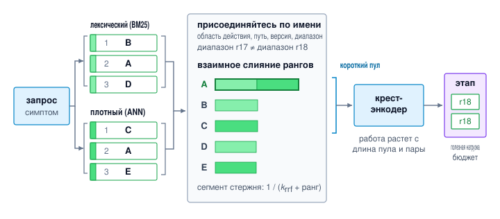
После переранжирования кандидаты с верхними позициями переходят в конвейер размещения (Глава 6.3.3), где проверяются их происхождение и полномочия перед инъекцией в полезную нагрузку контекста агента. Однако даже оптимально ранжированный набор свидетельств даёт ограниченные гарантии. Извлечение реализации r18 и проходящего воспроизводящего теста подтверждает локальный синтаксис и изолированное выполнение теста, но не может доказать, что все параллельные пути вызывающих кода остаются свободными от гонок. Проверка более широких системных свойств требует подтверждающих записей — например, трассировок исполнения во время выполнения и результатов многопоточных тестов, — которые ни один ранжированный список в отдельности не собирает.
6.7 Многопрыжковый поиск
В ремонте пула соединений ни один отдельно ранжированный фрагмент не доставляет всех свидетельств, необходимых для исправления, поскольку основная реализация в src/pool.py, тест уведомления ожидающих и записанные журналы выполнения тестов отвечают на разные вопросы. Рассмотрение реализации пула в изоляции не может выявить, какие пути исполнения реально прошёл тест, а просмотр журнала прошедшего теста оставляет открытым вопрос, сохранило ли изменение более широкие гарантии публичного интерфейса. Многопрыжковый поиск устраняет этот разрыв, обходя явные связи между элементами свидетельств и собирая объясняющую цепочку, которую не мог бы обосновать сам по себе поисковый рейтинг ни одного отдельного фрагмента.
Реализация многопрыжкового поиска не обязательно требует специализированной графовой базы данных. Агент может изучить извлечённый фрагмент, извлечь неразрешённую ссылку и выполнить целевой вызов инструмента для получения следующего исходного артефакта. Альтернативно среда исполнения может разрешать известные ссылки заранее до вызова модели. Предвычисление и поддержка явных связей между сущностями окупаются лишь тогда, когда последующие запросы используют эти связи достаточно часто, чтобы амортизировать накладные расходы на разбор и индексирование.
6.7.1 Цепочки свидетельств
Передача модели отдельных фрагментов из журналов тестов r17, tests/test_pool.py и src/pool.py без записи того, как они связаны, оставляет агенту догадываться, какой тест проверял какой метод и при какой ревизии. Явная цепочка свидетельств вместо этого связывает эти записи вместе. Она начинается с записанного сбоя test_waiter_notified_on_return под ревизией r17 (ограниченной ревизией теста и средой исполнения). Оттуда обход идёт от проверки в tests/test_pool.py непосредственно к операциям пула, задействованным сценарием возврата ожидающего в src/pool.py. Затем эти области исходного кода сравниваются с кандидатным патчем ревизии r18 и его соответствующим воспроизводящим выполнением. Контракты публичного интерфейса и несвязанные вызывающие остаются изолированными для последующих целевых запросов.
Рёбра вдоль этой цепочки несут различную семантику. Связь от запуска теста к хэшу коммита привязывает результат к точно наблюдаемому артефакту. Статическая ссылка на символ в тестовом коде указывает лишь на сущность реализации, ожидающую рассмотрения. Дифф между ревизиями выделяет текстовые изменения между снимками. Надёжная полезная нагрузка поиска сохраняет эту маркированную семантику рёбер наряду с точными местоположениями в исходном коде и хэшами коммитов. Среда исполнения должна также раскрывать неразрешённые или разорванные связи — например, отсутствующий журнал теста, неоднозначную цель динамической диспетчеризации или обход, остановленный бюджетом токенов. Статическая цепочка свидетельств выделяет правдоподобные кандидатные первопричины, но не может доказать, что именно эти инструкции выполнялись в ходе сбоящего запуска, и не гарантирует, что все задействованные зависимости были обнаружены.
6.7.2 Поддерживаемые графы кода
Отслеживание каждого файла, который лишь импортирует src/pool.py, затапливает многошаговый поиск десятками нерелевантных модулей, тогда как плоская таблица символов не позволяет проследить, как значение, изменённое в одном методе, достигает очереди ожидания в другом. Для поддержки избирательных рассуждений над репозиториями программного обеспечения граф свойств кода (code property graph) объединяет абстрактные синтаксические деревья, графы потока управления и графы зависимостей программы в единый ориентированный граф программных сущностей, соединённых типизированными рёбрами (Yamaguchi и др. 2014 г.). К наиболее значимым для программных агентов типам рёбер относятся синтаксическая вложенность и объявления, рёбра вызовов, связывающие места вызова с целевыми функциями, рёбра зависимости по данным, прослеживающие определения значений до их использований, наследование типов и импорты на уровне модулей.
Именно типизация рёбер делает многошаговый обход графа избирательным, а не комбинаторным. Ограничив обход рёбрами вызовов и зависимостей по данным, можно пройти напрямую от test_waiter_notified_on_return через метод возврата ресурса в пуле к изменяемому им состоянию, игнорируя рёбра импортов модулей, расходящиеся по несвязанным файлам. Точку входа такого обхода — начальный узел — можно разрешить через точечный поиск символа, первичный ранжированный поиск по фрагментам либо явные координаты файла и строки из трассировки исполнения.
Однако ребро надёжно ровно настолько, насколько надёжен механизм его извлечения. Лексический разбор надёжно распознаёт объявленный синтаксис. Разрешение межфайловых целей вызова требует полной информации о типах и конфигурации сборки. Динамические трассировки исполнения наблюдают лишь конкретные пути, пройденные при конкретном вызове. Поэтому графы кода должны отслеживать происхождение (provenance) на каждом ребре, гарантируя, что среда исполнения никогда не выдаст статически выведенный вызов за наблюдаемое событие времени выполнения. Более того, поддержка таких графов влечёт постоянные накладные расходы на инвалидацию по мере эволюции кодовой базы. Локальное изменение сигнатуры метода может инвалидировать графы вызывающих сторон и зависимые конспекты в нескольких репозиториях, тогда как правка внутреннего комментария структурные рёбра не затрагивает. При изменении исходных артефактов любая связь, чьё базовое доказательство изменилось, должна быть удалена или помечена как устаревшая в соответствии с контрактами обновления, установленными в Глава 6.9.
6.7.3 Ограниченное расширение
Даже на типизированном графе кода неограниченный обход от test_waiter_notified_on_return может бесконечно зациклиться вокруг взаимно рекурсивных вспомогательных функций или разойтись через общий логирующий модуль на десятки вызывающих сторон, исчерпав контекстное окно вниз по потоку. Поэтому подпрограммам обхода необходимы строгие операционные ограничители: фильтрация допустимых типов рёбер, ограничение направления обхода, предельная глубина поиска и ограничение общего числа посещённых узлов. Отслеживание идентификаторов посещённых сущностей необходимо, чтобы циклы не вызывали бесконечное расширение. Даже при структурных ограничениях лимиты упаковки контекста остаются связующими, поскольку горстка крупных узлов кода или документации легко переполняет бюджет промпта.
В этих операционных границах среда исполнения может приоритизировать узлы-кандидаты по семантической релевантности, аффинностям типов рёбер или алгоритмам графовой центральности вроде Personalized PageRank (Page и др. 1999 г.), который концентрирует вероятность случайного блуждания вокруг начальных узлов. Однако наивный порог по баллам для узлов-кандидатов рискует разорвать цепочку доказательств. Сохранение связного объяснения зачастую требует удерживать промежуточный узел с более низким индивидуальным баллом запроса, чтобы поддержать топологическую связность между начальным узлом и ценными конечными доказательствами, компенсируя это удалением несущественных узлов в других местах.
↪ Обновление personalized PageRank и его единственная неподвижная точка разобраны в PageRank-граф символов для карт репозитория.
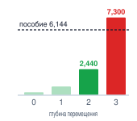
Ещё один уровень глубины превращает комфортное размещение в переполнение.
Глубина, а не размер узла, определяет, поместится ли окрестность в бюджет контекста, поскольку каждый шаг умножает фронтир расширения на коэффициент ветвления. Ноутбук 6.3 считает точное дерево, показывая, как быстро один лишний уровень превращает комфортную полезную нагрузку в переполнение.
Инженерный расчёт 6.3: Расширение графа и бюджет доказательств
Переменные: Пусть окрестность — дерево ровно с 3 детьми у каждого внутреннего узла, исследуемое на глубину 3, где начальный узел находится на глубине ноль и повторных узлов нет. Каждая полная запись узла занимает 180 сериализованных токенов, включая локальное происхождение. Зарезервируем 100 токенов суммарно на описания рёбер и результирующий конверт. Все счётчики — гипотетические фиксированные размеры сериализации.
Вычисления: Подсчёт начального узла и всех уровней даёт геометрическую сумму
Остановившись на уровень раньше, на глубине 2, размещаются все 13 узлов в 2,440 токенов.
Системный вывод: Глубина доминирует над стоимостью обхода, потому что каждый дополнительный шаг умножает фронтир расширения на коэффициент ветвления графа. Один лишний уровень отделяет полезную нагрузку с доказательствами, комфортно помещающуюся в контекстное окно, от той, что переполняет выделенный объём. Движки обхода должны ограничивать глубину и фильтровать типы рёбер до ранжирования узлов. В этих пределах ранжирование должно приоритизировать узлы, сохраняющие связность пути, а не жадно выбирать несвязные высокобалльные фрагменты.
Промышленные графы кода содержат кластеризованные сообщества, циклы и сильно скошенные распределения степеней. Следовательно, вычисление достижимых узлов возведением среднего коэффициента ветвления в степень глубины обхода обычно переоценивает число различных достижимых сущностей и недооценивает локальный объём поисковой работы, необходимый для оценки рёбер-кандидатов. Когда цепочка доказательств превышает бюджет размещения, среда исполнения должна либо сузить область запроса, либо вернуть усечённый подграф с явным курсором продолжения, либо отложить дальнейшее расширение до последующих интерактивных ходов агента. По правилу отсутствия любой обход, остановленный инженерным ограничением, должен быть явно отмечен как частичный, а не исчерпанный.
6.7.4 Конспекты сообществ как производная память
Не всякий вопрос агента сводится к единственной цепочке доказательств. Высокоуровневые архитектурные запросы часто охватывают целые подсистемы — например, как пулы соединений, диспетчеризация HTTP-запросов и жизненные циклы транзакций взаимодействуют в рамках сервисного фреймворка. Генерация с дополнением поиском на основе графов (GraphRAG) отвечает на такие более широкие вопросы, строя граф знаний из сущностей и заранее вычисляя иерархические конспекты над плотно связанными подграфами, то есть сообществами (Edge и др. 2024 г.). Неподнадзорное обнаружение сообществ7 кластеризует связанные узлы по сетевой топологии. Однако соответствие обнаруженного топологического кластера настоящей архитектурной границе и техническая точность его сгенерированного конспекта на естественном языке — отдельные задачи верификации.
Производный конспект амортизирует токен-затраты, синтезируя разрозненные факты в компактный артефакт, но остаётся потерянным, вторичным представлением. Каждый сгенерированный конспект должен сохранять двунаправленные ссылки на свои исходные доказательства и записывать точные ревизии артефактов и операционные параметры, которые он описывает. Он также должен наследовать самый строгий метку доступа среди своих исходных входов, чтобы конспект, построенный частично из записей, ограниченных одним арендатором, сам был ограничен этим арендатором. Детальные планы исполнения должны обращаться к авторитетным исходным записям; конспект служит прежде всего индексированной навигационной картой.
↪ Как метки распространяются через конспекты и другие преобразования в рамках политики информационных потоков, разобрано в Распространение меток через преобразования.
Например, автоматический конспект ремонта может фиксировать, что ревизия r18 прошла test_waiter_notified_on_return при конкретной конфигурации многопоточного параллелизма. Поскольку наблюдение ограничено протестированной конфигурацией, этот факт нельзя обобщить до утверждения «пул соединений потокобезопасен». Более того, предварительно вычисленные конспекты влекут постоянную задолженность по инвалидации. Сохранение явного манифеста зависимостей между исходными файлами, обнаруженными сообществами и сгенерированными конспектами превращает инвалидацию в обход записанных зависимостей, а не догадку. Любая правка кода помечает все зависимые конспекты (и любые производные от них более высокие свёртки) как «грязные». Среда исполнения может продолжать отдавать «грязный» конспект как помеченный исторический снимок, пока офлайн-задача или триггер по требованию не пересоберёт или не инвалидирует его.
Контрольная точка 6.2: Выбор и ограничение связных доказательств
Примените эти стратегии поиска к сквозному ремонту пула соединений.
Решение о том, сохранять ли детальное объяснение пути или выскоуровневый конспект подсистемы, — это решение политики записи, а не механика поиска. Эта политика определяет точность, устаревание и стоимость доказательств, которые каждая последующая сессия агента сможет извлечь.
6.8 Путь записи памяти
Поиск может вернуть лишь то, что система сохранила. Ассистент, держащий директиву «никаких встреч до 10:00» строго внутри текущего контекстного окна, теряет это ограничение в момент завершения сессии. Сохранение предпочтения в долговременное хранилище решает немедленную волатильность диалога, но вводит задачу согласованности, обозначенную в Глава 6.2. Когда пользователь позже переносит границу на 11:00, среда исполнения должна гарантировать, что более ранняя запись перестаёт управлять новыми решениями планирования, не искажая историческую аудиторскую запись.
Различие между авторитетными источниками и производными записями управляет записью так же, как оно управляло чтением (принцип «Полномочия остаются у источника»). Явная директива пользователя — прямое доказательство намерения в конкретной операционной области. Внутренний пересказ агента — потерянное производное представление. Автоматическое обоснование того, почему пользователь не любит утренние встречи, — неподкреплённый вторичный вывод. Хранение всех трёх артефактов как взаимозаменяемых утверждений нивелирует доказательный вес, лишая конвейеры поиска далее по потоку способности отличить проверенное намерение пользователя от спекулятивных конспектов модели.
Определение 6.2: Политика записи памяти
Политика записи памяти (memory write policy) — правило среды исполнения, определяющее, какие предлагаемые записи попадают в долговременное хранилище, какие утверждения и операционные области они несут, и как система впоследствии исправляет, замещает, перепроверяет, истекает, удаляет эти записи и их производные далее по потоку.
- Значимость: Каждая принятая запись становится кандидатом на поиск в последующих сессиях агента. Непроверенный урок, принятый в хранилище, может снизить точность исполнения каждой будущей задачи, которая его извлечёт. Путь записи предоставляет самый экономный барьер против загрязнения памяти, потому что проверки приёма выполняются один раз на запись, а не амортизируют затраты на фильтрацию по тысячам последующих поисковых запросов.
- Различие: Удержание в хранилище сохраняет сырые байты в базе данных или индексе. Политика записи памяти управляет операционной авторитетностью этих байтов, определяя, какие утверждения может обосновать запись и когда она должна перестать влиять на решения исполнения.
- Типичная ловушка: Дедупликация записей только по схожести эмбеддингов, ошибочно отбрасывающая почти идентичные обновления (например, изменённое время встречи или переключённый логический флаг) как избыточные дубликаты.
6.8.1 Область действия записи и доказательства
Пользователь, глядя на календарь своей команды в Нью-Йорке, говорит «никаких встреч до 10:00», и агент сохраняет голое правило "no meetings before 10:00". Через месяц агент отклоняет звонок клиента из Лондона в 9:30 по календарю поездок пользователя, потому что сохранённая запись никогда не зафиксировала, какой это календарь, какой часовой пояс и какое согласие санкционировало запись. Каждая запись-кандидат в память требует конкретного кортежа происхождения: идентифицируемого владельца, предполагаемой операционной роли, ограниченной области применимости и проверяемых подтверждающих доказательств. Кроме того, среда исполнения должна соблюдать явные границы согласия: разрешение просматривать сообщения пользователя во время активного рассуждения не даёт разрешения сохранять эти детали в долговременное хранилище.
Траектории ремонта ПО порождают другой класс доказательств. Например, записи исполнения тестов, показывающие провал на ревизии r17 и успех на ревизии r18, представляют неизменяемые исторические наблюдения, но ни один из результатов не оправдывает безусловное утверждение о кодовой базе. Синтезированное правило вроде «проверить путь возврата, когда ожидатель остаётся заблокированным» — эвристическая гипотеза, выведенная из этой последовательности, а не доказанный инвариант. Таблица 7 формализует эти различия, категоризируя, как разные записи памяти связывают последующее исполнение.
| Тип записи | Сохраняемые доказательства | Ограничение на последующее использование |
|---|---|---|
| Явное предпочтение | Утверждение пользователя, личность, область действия и версия утверждения | Действует в этой области до пересмотра или отзыва |
| Наблюдение с ограниченной областью | Результат инструмента, проверенная ревизия, команда и релевантные условия исполнения | Сообщает о наблюдаемом случае, а не обо всех последующих состояниях |
| Сгенерированный урок или гипотеза | Подтверждающие наблюдения, вывод, неразрешённые допущения и противоречащие данные | Предлагает расследование; не устанавливает новый факт и не даёт полномочий |
| Конспект эпизода или заметка о продолжении | Идентификатор задачи и ссылки на сохранённые события и артефакты | Переносит отобранную историю или незавершённую работу; не заменяет исходные доказательства |
Эти виды записей предъявляют разные требования в разных операционных архетипах. Исследовательский агент и агент поддержки нагружают конвейер записи памяти иначе, чем агент ремонта.
Опорный пример 6.1: Долговременная память по архетипам
| Lighthouse | Доминирующая долговременная запись | Источник записи | Связывающая опасность | Акцент политики записи |
|---|---|---|---|---|
| Repair agent | Наблюдения за тестами и заметки о ходе работы, привязанные к ревизиям | Репозиторий на момент исходной генерации | Собственные правки делают индексированные копии устаревшими | Помечать каждое наблюдение ревизией; инвалидировать при собственных записях агента |
| Research agent | Заметки и сводки, извлечённые из загруженных страниц | Каждая внешняя страница в том виде, как загружена, со временем загрузки | Недоверенный текст через суммаризацию превращается в уверенный «урок» | Принимать извлечённые утверждения как гипотезы со ссылками на загруженные страницы |
| Support agent | История клиента, предпочтения и ответы о политике | Запись клиента и опубликованные документы политики | Устаревшее предпочтение или не подкреплённый политикой ответ используется повторно | Заменять явной суперсессией; распространять удаление на каждую производную копию |
Системная закономерность: опасность для памяти агента ремонта исходит от его собственных записей, агента исследования — от чужого текста, а агента поддержки — от времени. Один контракт поиска обслуживает все три, а расходятся они именно в политике записи.
6.8.2 Приём до дедупликации
Когда модель может записывать заметки напрямую в долговременное хранилище без проверки на этапе исполнения или когда конвейер записи дедуплицирует кандидатов по косинусной близости до анализа их утверждений, спекулятивная догадка попадает в хранилище как факт, а правка предпочтения с «не назначать встречи до 10:00» на «не назначать встречи до 11:00» отбрасывается как почти-дубликат. Даже если архитектура позволяет языковой модели управлять своим активным контекстом, явным образом выгружая записи памяти на страницы (Packer и др. 2023 г.), выгрузка контекста управляет лишь заполнением рабочего множества; долговременный приём остаётся исключительной ответственностью среды исполнения хранилища. Ворота приёма проверяют права записи, подтверждают, что целевое хранилище допускает долговременное удержание для активной сессии, классифицируют тип записи и убеждаются, что приложенные доказательства удовлетворяют схеме, — и всё это до любого запуска проверки дедупликации. Структурная валидация схемы проверяет обязательные поля, такие как временные метки и идентификаторы происхождения.
Семантическая точность — требование, чтобы предлагаемая запись не утверждала ничего, чего нет в исходной расшифровке, — нуждается в собственной проверке, и эта проверка есть верификатор с частотой ошибок, как и любой другой. Детерминированная проверка может валидировать ограниченный структурированный ввод против владельца, отношения, значения и области действия предлагаемой записи. Обнаружение «11:00» в свободном тексте устанавливает лишь факт его встречаемости; «11:00 применяется только по пятницам» не подкрепляет неограниченное предпочтение планирования. Для сводок в свободной форме откалиброванный модельный судья — это один из ошибаемых проверщиков точности, и его частота ложного принятия (Как базовые частоты ограничивают точность проверки) измеряет, как часто неподкреплённые утверждения проходят эту проверку в долговременное хранилище, откуда их может извлечь любая последующая сессия. Генерация сводки и установление её точности — разные события; это асимметрия верификации (принцип «Асимметрия верификации»), применённая к приёму в память. Конфиденциальные данные (например, учётные данные и приватные идентификаторы) требуют строгой классификации и политик очистки. Регулярные выражения пропускают неструктурированные раскрытия, не совпадающие ни с одним стандартным шаблоном секрета. Когда агент предлагает интерпретативный вывод без прямого наблюдательного подкрепления, ворота приёма должны либо отклонить кандидата, либо понизить его до явно помеченной гипотезы, не позволяя ему маскироваться под проверенное предпочтение или конкретное наблюдение.
Только после прохождения приёмочной валидации среда исполнения оценивает, вставляет ли запись-кандидат новую запись, обновляет существующую или дублирует уже имеющееся знание. Векторная близость в пространстве эмбеддингов полезна для поиска кандидатов, но не может разрешить семантику записи. Поскольку пороговые значения расстояния сочли бы правку с 10:00 на 11:00 неинформативным повтором, дедупликация и маршрутизация обновлений должны сначала сопоставлять по идентичности сущности, области действия и виду записи.
Когда принятая запись нацелена на существующую сущность в той же области действия, среда исполнения выполняет суперсессию. Среда исполнения создаёт новую версионированную запись и помечает предыдущую как замещённую. Это прекращает право прежней записи участвовать в текущих решениях, сохраняя её в исторических журналах для аудита и отслеживания происхождения. Когда области действия различаются (например, если ограничение 11:00 действует только по пятницам), обе записи остаются действительными в своих доменах. Когда области действия перекрываются неоднозначно, среда исполнения должна пометить неразрешённый конфликт или запросить у пользователя разъяснение. Эвристический синтез конфликтующих записей в расплывчатый компромисс даёт хрупкое, не подкреплённое поведение. Системы также должны отличать исправление на месте от подлинного перехода состояния. Исправление ошибки транскрипции, исказившей «10:00», восстанавливает точность существующей записи, тогда как принятие обновления на 11:00 документирует подлинное изменение предпочтения.
Параллельные обновления требуют явных координационных примитивов на уровне хранилища. Предлагаемая суперсессия должна нести идентификатор базовой версии, относительно которой она была сгенерирована. Хранилище затем оценивает и применяет обновление атомарно через compare-and-swap или условную запись. Это та же оптимистическая валидация, которую контекстная инженерия применяла к предусловиям инструментов, и она закрывает гонку, присущую раздельным фазам чтения и записи. Оптимистическая валидация особенно хорошо подходит записям в память. Две сессии редко пересматривают одно и то же предпочтение одновременно, поэтому конфликты редки, а вызов модели длительностью в несколько секунд делает пессимистическую блокировку непрактичной для удержания через вызов, предлагающий запись. Когда коллизия всё же происходит, среда исполнения должна прервать запись, перезагрузить актуальное состояние и переоценить обновление согласно явной политике разрешения конфликтов. Возвращение конфликта модели для смешивания двух состояний без транзакционных гарантий приглашает тихую порчу данных.
↩︎ Оптимистическая валидация — проверка при фиксации, что состояние, прочитанное решением, не изменилось, и откат в противном случае, — описана в Обнаружение изменений и ограничение неопределённости.
6.8.3 Записанные наблюдения и производные уроки
Если агент ждёт завершения рефлексивной сводки и векторного эмбеддинга, прежде чем записать сырой вывод инструмента, таймаут или сбой модели суммаризации теряет твёрдое свидетельство того, что инструмент действительно сделал. Когда агент выполняет действие, среда исполнения немедленно записывает сырое наблюдение (контекст исполнения, ID задачи, исходную ревизию, параметры инструмента и статус сырого вывода) в долговременное хранилище. Только после этой начальной записи среда исполнения планирует фоновые конвейеры суммаризации, генерации эмбеддингов и эвристической рефлексии, удерживая дорогостоящие вызовы модели вне синхронного пути инструментов. Генерация рефлексивных сводок показала значимые эмпирические выигрыши в автономном восстановлении после ошибок (Shinn и др. 2023 г.). Полученные вербальные рефлексии тем не менее должны попадать в хранилище строго как сгенерированные гипотезы (Таблица 7) с явными внешне-ключевыми ссылками на сырые наблюдения, из которых они были выведены.
Подтверждения записи должны явно сообщать достигнутую границу долговечности. Системы должны различать три гарантии: буферизация в памяти (постановка в очередь в эфемерный локальный кольцевой буфер), фиксация в долговременном хранилище (сброс на энергонезависимый диск или репликация между узлами хранения по контракту долговечности) и индексация для поиска (видимость для векторных и ключевых поисковых движков). Простая постановка события в очередь воркера в памяти даёт нулевую устойчивость к сбоям. Если задача требует строгих гарантий персистентности до совершения необратимых внешних действий, среда исполнения должна блокироваться в ожидании подтверждения хранилища, а не продолжать в оптимистическом режиме. Кроме того, фоновые конвейеры индексации и рефлексии потребляют значительные циклы ускорителей и дисковый ввод-вывод. Планировщики систем должны явно учитывать эти фоновые рабочие нагрузки, чтобы асинхронная индексация памяти не голодала пользовательский интерактивный инференс.
6.8.4 Ревалидация, истечение срока и удаление
После фиксации записи её статус меняется по мере эволюции подкрепляющих её свидетельств и операционного контекста. Замещённое предпочтение «до 10:00» и отказ теста на r17 оба остаются точными историческими записями после утраты права участвовать в текущих решениях, тогда как неподтверждённое правило планирования, извлекавшееся на протяжении 30 запусков без жалоб, использовано тридцать раз, но не проверено тридцать раз. Удержание исторических снимков — сознательный архитектурный выбор политики, а поддержание доверия к активным записям во времени требует явных правил ревалидации, истечения срока и удаления.
Ревалидация обновляет эмпирическое подкрепление существующей записи. Запрос пользователю подтвердить, что граница планирования 11:00 всё ещё действует, даёт авторитетное свежее свидетельство, тогда как многократное извлечение на десятках запусков указывает лишь на частое использование и не добавляет нового подкрепления. Следовательно, схемы хранения должны вести отдельные временные метки создания записи, последнего доступа и последнего авторитетного подтверждения. Аналогично, ревалидация автоматизированного диагноза или эвристического правила, выведенных из ревизии r18, требует проверки их по текущему дереву исходного кода и активной тестовой среде, а не подстановки основанного на возрасте затухания вместо корректности.
Истечение срока отзывает право записи участвовать в принятии решений, когда проходит временная метка истечения или срабатывает заданное системное условие. Истёкшая временная директива, например окно планирования «вне офиса», не должна управлять последующими действиями без явного повторного подтверждения. Некоторые системы памяти ранжируют записи по близости, умноженной на фактор новизны, убывающий с возрастом. Так наказывать истёкшую запись недостаточно: если у запроса мало близких семантических совпадений, истёкшая запись со штрафованным баллом всё равно может попасть в top-
Записи, построенные из данных самого пользователя, несут обязательство, которого нет у записей об исходном коде, потому что человек, которого они описывают, имеет право голоса в том, сохраняются ли они и как долго. Разрешение читать сообщение в ходе рассуждения не даёт разрешения удерживать его (Глава 6.8.1). Поэтому каждая принятая запись пользователя должна нести согласие, на основании которого она принята, и срок удержания, по наступлении которого она должна быть удалена, а не просто исключена из поиска. Хранилище может исполнить отзыв согласия, только если оно способно перечислить каждую запись, описывающую пользователя, включая производные сводки, вместе с записанным для каждой согласием. Отзыв согласия, истёкший срок удержания и явный запрос на удаление запускают одну и ту же процедуру удаления.
Удаление затрагивает физический и логический жизненный цикл сохранённых данных. Когда пользователь отзывает согласие или просит удалить предпочтение, очистка первичной строки базы данных — лишь начальный шаг. Устаревшие представления часто задерживаются во вторичных индексах, плотных векторных хранилищах, консолидированных эпизодических сводках, кэшах «ключ—значение» и пре-стейдженных шаблонах промптов, управляемых средой исполнения. Случай «ключ—значение» легко пропустить: кэшированный префикс, содержащий удалённое предпочтение, всё ещё совпадает с любым запросом, повторяющим эти токены, а совпадение префикса подтверждает идентичность токенов, а не актуальные факты. Поэтому среда исполнения должна выселить этот префикс или изменить промпт так, чтобы он больше не совпадал. Исчерпывающая процедура удаления должна идентифицировать каждый производный объект вниз по течению, немедленно отзывать его право участвовать в поиске и планировать фоновую утилизацию или реиндексацию в согласии с действующей политикой удержания данных. Чтобы перекрыть задержку между получением запроса и асинхронной сборкой мусора, системы записывают хранилищный аналог маркера, который инвалидация контекста помещает в промпт. Этот надгробный камень (tombstone)8 — долговременная запись исключения, которая отфильтровывает сущность из всех активных путей запросов до завершения физической очистки.
↩︎ Почему попадание в префиксный кэш подтверждает идентичность токенов, а не свежее свидетельство, описано в Совместимость префиксов.
↩︎ Надгробные камни как маскирующие записи, которые лог-структурированные движки хранения держат до компакции, и их отличие от уведомления в промпте описаны в Удаление, замена или добавление.
Квитанция об удалении должна точно указывать достигнутую границу гарантий. Неизменяемые холодные резервные копии, внеполосные внешние журналы аудита и отправленные API-нагрузки в полёте к сторонним провайдерам моделей лежат вне периметра синхронного удаления. Удаление записи из памяти среды исполнения не может отозвать токен промпта, который внешняя фундаментальная модель уже обработала, ни отменить уже отправленное по корпоративной сети приглашение в календарь. Что среда исполнения может и должна гарантировать — так это немедленное прекращение использования удалённой сущности в будущих циклах рассуждений каждым внутренним индексом, кэшем и буфером сборки промптов в пределах её домена доверия.
6.8.5 Консолидация
После дюжины сессий отладки асинхронной среды исполнения извлечение сорока отдельных трассировок стека и сырых журналов тестов переполняет бюджет поиска прежде, чем модель увидит связывающий их паттерн. Консолидация сжимает кластеры связанных мелкозернистых записей в структурированные высокоуровневые представления, оптимизированные для будущего поиска, — например, архитектурную сводку, документирующую, какие пути уведомлений были проверены, какие ревизии нарушили инварианты и какие гипотезы остаются открытыми. Архитектуры автономных агентов часто используют фоновых воркеров для синтеза эпизодических наблюдений в высокоуровневые рефлексии (Park и др. 2023 г.). С точки зрения систем каждая консолидированная рефлексия — это сгенерированный урок (Таблица 7). Кластеризация записей по близости эмбеддингов помогает выявить группы-кандидаты для консолидации, но одной векторной близости недостаточно для установления причинных связей. Верификация того, что два отказа имеют общий лежащий в основе дефект, требует структурных свидетельств, которые семантическая близость дать не может.
При генерации консолидированных записей конвейер записи должен сохранять графы происхождения, явно записывая ссылки на исходные сырые записи, граничные условия и любые наблюдённые контрпримеры. Синтез нескольких успешных трасс исполнения в безусловную глобальную процедуру рискует чрезмерно обобщить доменно-специфичное поведение. Удержание исходных наблюдений рядом с консолидированной абстракцией также остаётся сознательным архитектурным решением. Консолидированные сводки экономят токены промпта при инференсе, но удаление сырых журналов лишает детальных трасс исполнения, необходимых для глубокого аудита и последующей реиндексации.
6.8.6 Самоусиливающиеся ошибки
Ошибочная диагностическая догадка, скопированная в сводку эпизода, поглощённая еженедельным отчётом о вехах и в конечном счёте консолидированная в кросс-проектную эвристику, всё ещё целиком покоится на исходном ошибочном умозаключении. По формальным правилам доказательности повторное извлечение и пересуммаризация дают нулевую независимую валидацию, однако каждый цикл консолидации рискует трактовать сохранённое предположение как установленную посылку и усиливать его через последовательные поколения контекста. Отравление памяти — это устойчивое сохранение непроверенного или отозванного утверждения через записи, из него выведенные. Чтобы предотвратить его, движок хранения должен поддерживать строгую зависимостную прослеживаемость происхождения по всем производным артефактам. Когда оператор или проход верификации инвалидирует отравленную запись, инвалидация должна каскадно пройти через весь граф зависимостей, отзывая или помечая как подозрительные каждую сводку и производный урок вниз по течению. Простое понижение в ранжировании или надгробие корневой записи недостаточно, если производные сводки продолжают циркулировать в поисковых индексах. Наконец, даже полностью валидированный, не отравленный урок — лишь кандидат-предложение к действию. Движок исполнения всё равно должен принудительно применять строгие политики авторизации в среде исполнения и предусловия окружения всякий раз, когда агент пытается действовать на основе извлечённых воспоминаний.
Контрольная точка 6.3: Жизненный цикл предпочтения
Пользователь меняет правило «никаких встреч до 10:00» на «никаких встреч до 11:00» для того же календаря, а затем просит удалить эту настройку. Индекс и сессионная сводка всё ещё содержат исходное значение.
Путь записи в память определяет, что утверждает сохранённая запись, какими доказательствами она подкреплена и когда истекает её операционная применимость. Однако эти решения достигают агента только через производные индексы и кэши, которые перестраиваются после изменения хранилища, и пока отстающий индекс не догонит изменения, он может вернуть запись, которую путь записи только что вывел из употребления.
6.9 Инвалидация хранилища
Исправление пула соединений достигло ревизии r18, тем не менее последующий поиск всё ещё может вернуть фрагмент src/pool.py, проиндексированный на r17. Рассмотрим, как единственное устаревшее чтение разрушает в целом систематическую траекторию отладки:
- На шаге 12 агент редактирует путь возврата в
src/pool.py, и инструмент редактирования рабочего пространства подтверждает обновлённый файл наr18. - На шаге 13 поиск логики уведомлений извлекает чанк
r17, который всё ещё содержит ошибочную строку, заменённую на предыдущем шаге, без метки версии. - На шаге 14 модель заключает, что её более раннее изменение было утеряно, и повторяет правку. Инструмент редактирования отклоняет запрос, поскольку целевой фрагмент больше не существует в текущем файле.
- На шаге 15 модель сталкивается с противоречивыми сигналами: подтверждённая запись, фрагмент, противоречащий этой записи, и неудавшаяся повторная правка. Она приходит к выводу, что файловая система рабочего пространства повреждена, и начинает выполнять спекулятивные размашистые правки. Каждое действие сжигает токены контекста и бюджет инструментов, удаляя репозиторий всё дальше от проверенного состояния.
Непомеченное устаревшее чтение запускает этот отказ, подавая точный исторический фрагмент как текущее состояние. Противоречивые доказательства не устанавливают повреждение файловой системы. Прямое чтение текущего исходного кода могло бы вскрыть расхождение. Рассуждение модели не может надёжно компенсировать слой поиска, скрывающий, какую версию описывают его доказательства, и каждый шаг, потраченный траекторией впустую, удлиняет горизонт, на котором ошибки отдельных шагов накапливаются (Уравнение (1)). Поддержание постоянного индекса поэтому требует чистого разделения двух операций, которые эфемерный промежуточный промпт естественно связывает воедино: удержания устаревших записей и генерации их замен.
Определение 6.3: Инвалидация хранилища
Инвалидация хранилища — это исключение производной записи (элемента индекса, вектора, сводки или кэшированного результата) из поиска по текущему состоянию, как только существенное изменение её источника делает её неприменимой, независимо от того, когда будет построена замена.
- Значимость: Согласование исключения с коммитом источника предотвращает ситуацию, когда заведомо устаревшие записи остаются доступными, пока строятся их замены. Notebook 6.4 сравнивает дополнительные затраты на метаданные и индексацию отдельно от общих затрат на долговременный коммит и координацию. В траектории перехода
r17→r18с шага 12 по 15 одно непомеченное устаревшее чтение стоило три шага бюджета исправления. - Различие: Перестроение синтезирует замещающее представление, тогда как инвалидация лишь подавляет устаревшее. Это гарантирует, что любой запрос, приходящий в окне перестроения, получит либо авторитетное прямое чтение, либо явный неполный результат, а не устаревшие данные.
- Типичная ошибка: Отслеживание устаревания с помощью эфемерного «грязного» флага, сбрасываемого автоматически по завершении фоновой задачи. Если несогласованный индексирующий воркер завершится с опозданием или шлюз поиска перезапустится без долговременного состояния надгробий (tombstone), устаревшие записи могут быть ошибочно возвращены в обращение.
6.9.1 Поколения источника
Опора на временные метки модификации файловой системы (mtime) для обнаружения устаревших элементов индекса не работает, когда рассинхронизация часов, переключение ветвей или правки длительностью менее миллисекунды оставляют две ревизии с неразличимыми временными метками. Чтобы гарантировать свежесть, элемент индекса должен явно записывать поколение источника, из которого он выведен: монотонную версию идентификации, определённую контрактом записи системы хранения. В исправлении пула соединений r17 и r18 обозначают последовательные состояния репозитория. Как только среда исполнения устанавливает r18 как активное поколение, любой запрос, ищущий текущий код, должен систематически отбрасывать записи, помеченные r17.
Решение о том, какие производные записи затрагивает правка, — это отслеживание зависимостей, которое инвалидация контекста применяла к промежуточным наблюдениям, теперь применённое к записям, сохраняющимся в хранилище и его индексах. Новое на этом уровне то, что поколения делают отслеживание долговечным между сессиями, и то, что некоторые производные записи нельзя исправить на месте. Зависимости данных часто выходят за пределы отдельных файлов. Сырой фрагмент кода зависит только от ревизии своего исходного файла. Ребро графа вызовов зависит от нескольких исходных файлов плюс конфигурации статического анализа. Эпизодическая сводка зависит от выводов инструментов и диагностических журналов, которые она объединяет. Когда базовый артефакт меняется, среда исполнения должна инвалидировать все затронутые нижележащие записи, сохраняя нетронутыми несвязанные элементы. Если граф зависимостей груб или неполон, среда исполнения должна консервативно расширять границу инвалидации или явно сообщать о неопределённости поиска. Отсутствующая связь зависимости никогда не должна считаться доказательством корректности.
↩︎ Отслеживание того, какие утверждения зависят от каких наблюдений, и распространение инвалидации по этой записи изложено в Отслеживание зависимостей утверждений.
Системной точки зрения каждый индекс поиска — это материализованное представление над базовыми данными, задача, которую реляционные СУБД решают уже десятилетия. Классическое инкрементальное сопровождение представлений вычисляет обновления представления алгебраически из дельта-изменений базовых отношений, избавляя от необходимости повторного выполнения полного запроса (Blakeley и др. 1986 г.; Gupta и Mumick 1995 г.). Однако неструктурированные индексы поиска сопротивляются алгебраическому дельта-сопровождению. При схемах разбиения на чанки фиксированного размера вставка даже двух строк в начале исходного файла сдвигает границы токенов каждого последующего чанка. Поскольку глубокие нейросетевые модели эмбеддингов нелинейны, обновлённый вектор нельзя синтезировать из вычитания векторов и текстового диффа. Следовательно, изменённый текст требует отбрасывания существующих элементов и сквозных прогонов для повторного эмбеддинга новых чанков. Поэтому практические архитектуры поиска разделяют инвалидацию — метаданное исключение, согласованное с коммитом источника, — и перестроение индекса, которое потребляет значительные вычисления и сетевую задержку.
Помимо поколений источника, запись эмбеддинга должна также кодировать идентификатор модели, конвейер токенизации и гиперпараметры предобработки, которыми она была сгенерирована. Валидное поколение источника подтверждает лишь актуальность исходного текста. Оно не указывает, совместим ли вектор с активной моделью поиска и кодировщиком запросов.
6.9.2 Согласование источника и индекса
Если рабочее пространство коммитит r18 и публикует асинхронное событие инвалидации в очереди сообщений, запрос поиска, пришедший двумя миллисекундами позже, может достичь шлюза индекса раньше, чем сообщение в очереди, и получить r17 как текущее состояние. Избежать этой гонки требует скоординированного протокола между координатором хранилища, конвейером индексации и шлюзом поиска. Этот протокол предполагает, что среда исполнения агента управляет изменениями рабочего пространства. Он также предполагает, что шлюз поиска может запросить авторитетное поколение источника вместе с его содержимым. Наконец, он предполагает, что записи, публикации индексов и допуск запросов разделяют границу координации — например, атомарную транзакцию базы данных, условную запись в строго согласованное хранилище, реплики которого согласованы по единому порядку коммитов, или локальный мьютекс. Во время выполняющейся записи шлюз либо удерживает запросы в пределах жёсткого дедлайна задержки, либо помечает затронутую область файлов как временно недоступную. Очередь сообщений или брокер публикации-подписки сами по себе не могут обеспечить эти свойства, поскольку доставка сообщения — отдельное событие от коммита записи, которую оно анонсирует. Последовательность координации согласовывает модификацию источника, пока отстающий индексирующий воркер ещё активен:
- Координатор источника коммитит патч как поколение
r18и атомарно обновляет активный водяной знак поколения для проверок допуска. Здесь водяной знак — это маркер позиции, наивысшее поколение, которое шлюз считает текущим, а не один из порогов компакции из инженерии контекста. Это предотвращает расщепление видимости, при котором свежезакоммиченный код читается с диска, тогда как посторонний реестр индексов продолжает считатьr17текущим. - Последующий запрос
src/pool.pyизвлекает из фонового индекса векторы-кандидаты, выведенные изr17. Шлюз поиска сверяет их встроенную метку поколения с активным водяным знаком (r18) и подавляет их. Это исключение сигнализирует об отставании индекса, а не об отсутствии файла или неудавшейся правке. - Задача индексации, начатая до коммита, завершается с опозданием. При публикации индекса воркер проверяет захваченное поколение внутри границы координации. Распознав, что поколение
r18вытеснило его входные данные, координатор отбрасывает устаревший вывод или перенаправляет его в архивное хранилище. - Свежий воркер генерирует векторы-замены из снапшота
r18. Он публикует их условно, коммитя батч только если поколение рабочего пространства и конфигурация индекса оставались неизменными на протяжении всего окна индексации. - Входящие запросы непрерывно сверяют поколения-кандидаты с активным водяным знаком. Публикация записей
r18никогда не реактивирует более старые записиr17, а фоновые сборщики мусора освобождают выведенные из употребления векторы по независимому расписанию.
Валидация публикации и установка индекса должны происходить как единая атомарная операция, потому что проверка валидности поколения с последующей записью вносит гонку TOCTOU (time-of-check to time-of-use), позволяющую параллельным правкам инвалидировать полезную нагрузку. Находящиеся в памяти и долговечные надгробия регистрируют исключённые поколения, пока фоновые воркеры перестраивают представления. Поскольку допуск запросов принуждает проверки поколения при каждом обращении, старые кандидаты остаются исключёнными, даже если временные «грязные» флаги сбрасываются преждевременно. Аналогично, удаление исходного файла устанавливает версионированное надгробие, не позволяя запоздавшим воркерам случайно воскресить устаревшую запись из более раннего снапшота.
Поскольку большинство коммитов изменяют лишь несколько файлов, полная замена индекса при каждом коммите растрачивала бы работу. Элементы файлов, не затронутых r18, остаются точными, даже если были проиндексированы на r17 или ранее, тогда как элементы src/pool.py устаревают на r18. Поколения источника фиксируют эту поэлементную валидность в компактной интервальной форме. Каждая производная запись r18 для записей r17 файла src/pool.py), когда правка изменяет или удаляет эту область. Запрос, оценивающий поколение рабочего пространства
Для исполнения по текущему состоянию среда исполнения устанавливает r17, — запрос устанавливает [r17, r18) файла src/pool.py для воспроизведения на r17 и исключая их для r18.
Исключение решает проблему свежести, но вводит компромисс по эффективности, который накапливается со временем. Подавленные записи продолжают занимать память. В графе HNSW узлы с надгробиями остаются встроенными в списки смежности своих соседей. Поскольку жадный обход графа продолжает посещать и оценивать эти мёртвые узлы, прежде чем отфильтровать их на границе допуска, поиск с фиксированной шириной луча исследует меньше живых элементов, деградируя общую полноту (recall). Чтобы ограничить эту потерю, фоновый процесс компакции отслеживает долю записей с надгробиями,
Этот контракт координации должен оставаться устойчивым к перезапускам системы и несогласованным записывающим сторонам. При перезапуске шлюз поиска должен восстановить своё авторитетное состояние поколений из долговременного хранилища, прежде чем принимать запросы. Пустая находящаяся в памяти таблица надгробий никогда не должна считаться доказательством свежести индекса. Если внешние инструменты или разработчики изменяют файлы в обход координатора среды исполнения, события файлового наблюдателя могут приходить не по порядку или теряться. В ответ шлюз должен переходить к прямым чтениям с проверкой версии непосредственно из файловой системы. Если он не может проверить соответствие проиндексированного чанка диску до истечения дедлайна запроса, он обязан пометить конверт результата как непроверенный, а не возвращать потенциально устаревшие данные.
Реплицированные топологии поиска требуют явных гарантий чтения собственных записей (read-your-writes)9, обеспечивающих, что агент всегда наблюдает результаты своих собственных предшествующих действий (Terry и др. 1994 г.). Когда агент выполняет поиск после правки, запрос несёт номер позиции в журнале (LSN), соответствующий этой записи. Реплика, чья позиция воспроизведения (последняя применённая ей запись журнала) отстаёт от этого LSN, обязана приостановить исполнение в пределах ограниченного окна ожидания. Если реплика не догоняет до истечения дедлайна, шлюз либо направляет запрос авторитетному первичному узлу, либо возвращает явный ответ с частичным статусом.
6.9.3 Поиск во время обновления индекса
Подавление устаревшего вектора r17 для src/pool.py удерживает агента от чтения устаревшего кода, но пока эмбеддинг r18 ещё строится в фоне, запрос на реализацию пула всё равно требует ответа. Когда инвалидация подавляет запись во время обновления индекса, шлюз должен вернуть честную оценку доступных доказательств. Как показано в Таблица 9, производственный слой поиска может ответить одним из трёх исходов.
| Исход поиска | Предоставляемые доказательства | Оставшееся ограничение |
|---|---|---|
| Текущий результат из индекса | Полезная нагрузка, чьё поколение источника и конфигурация индекса удовлетворяют запросу | Ранжирование и ограниченный поиск всё ещё могут упустить релевантные записи; статус завершённости должен отражать выполненный поиск. |
| Авторизованное прямое чтение источника | Ограниченный фрагмент источника с наблюдаемой версией и происхождением | Прямой доступ может быть дорогим, недоступным или слишком узким, чтобы ответить на весь запрос. |
| Явный неполный результат | Допустимые частичные доказательства или отсутствие полезной нагрузки с объяснением недоступной области | Вызывающая сторона не получает запрошенных доказательств и не должна делать вывод, что в источнике нет совпадения. |
Подходящий резервный механизм зависит от структуры запроса. Для явного целевого пути вроде src/pool.py шлюз может выполнить авторизованное прямое чтение исходника, вернув актуальный текст r18, пока фоновые задачи эмбеддинга ещё выполняются. Напротив, широкий семантический запрос — например, поиск всех модулей, затронутых изменённым интерфейсом блокировки, — нельзя ответить чтением одного файла. Точный ответ требует либо обновлённого семантического индекса, либо исчерпывающего статического анализа по многим файлам. Если ограниченные прямые чтения не позволяют разрешить запрос в рамках бюджета исполнения, шлюз обязан вернуть явно помеченный неполный результат. Искусственное завышение лимитов кандидатов (например, расширение
Куда поместить эти накладные расходы на сопровождение — явное проектное решение. Синхронное переиндексирование переносит разбор, разбиение на чанки и эмбеддинг непосредственно на путь записи, гарантируя, что свежие представления существуют до выполнения любого последующего инструмента. Фоновое переиндексирование подтверждает запись после необходимого долговременного коммита исходника и согласованного исключения, позволяя инструментам возвращаться до завершения перестройки, полагаясь на шлюз в управлении запросами в окне обновления. Этот архитектурный компромисс зависит от частоты правок в рабочем пространстве и от того, могут ли ограниченные прямые чтения удовлетворить немедленные запросы downstream. Как показывает ноутбук 6.4, дополнительная работа по индексированию и локальным метаданным может различаться на несколько порядков, и различается также то, что видит запрос во время перестройки (Рисунок 7). Синхронное переиндексирование никогда не expose’ирует этот интервал, но блокирует запись; неконтролируемое фоновое индексирование выдаёт записи r17 как актуальные; а фоновое индексирование с исключением подавляет r17 и отвечает на запрос прямым чтением или частичным результатом.
Инженерный расчёт 6.4: Кто платит за актуальность индекса
Математика: Синхронное переиндексирование приостанавливает завершение записи, пока полностью не выполнены разбор, обновление постингов и векторные эмбеддинги. С опорой на локальную модель эмбеддинга этот конвейер добавляет 88 ms непосредственно на путь записи. Один батчированный удалённый вызов эмбеддинга увеличивает накладные расходы записи до 210 ms, а последовательные удалённые запросы по каждому файлу — до 1.26 s. Напротив, обновление 8 локальных элементов исключения добавляет 0.4 μs работы с метаданными в памяти. Последующие проходы поиска сверяют 50 кандидатов с этими метаданными, добавляя 1.5 μs локальных проверок. Локальные стадии переиндексирования занимают в 220,000× раз больше времени, чем эти обновления метаданных. Это соотношение не сравнивает полные долговременные задержки записи.
Системный вывод: По протоколу согласованных поколений исключение подавляет заведомо устаревшие записи до последующего допуска, хотя и не создаёт свежих представлений немедленно. Малые затраты на локальные метаданные не оценивают полный путь долговременного применения. Вычислительная стоимость переиндексирования не устраняется — она откладывается на фоновых исполнителей, требуя от шлюза запросов управления интервалом устаревания с помощью стратегий из Таблица 9. Согласуйте исключение с коммитом исходника. Рассматривайте синхронное переиндексирование, когда зависимые запросы приходят раньше, чем фоновые конвейеры успевают завершиться, а ограниченный резервный механизм не может предоставить необходимые свидетельства.
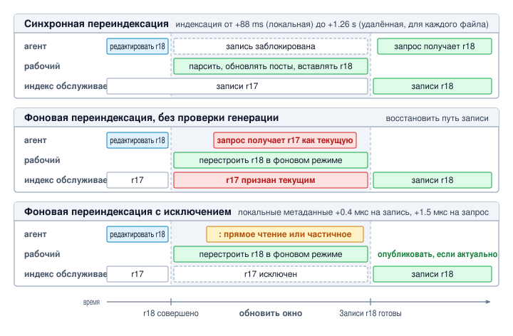
Извлечённые свидетельства представляют состояние исходника, наблюдавшееся в момент чтения. В агентной системе конкурирующая запись может попасть в хранилище прежде, чем модель завершит рассуждение и вызовет выбранное действие. Поэтому любой вызов инструмента, корректность которого зависит от неизменённости рабочего пространства, должен обеспечивать предусловие на этапе исполнения — например, оптимистичную проверку версии — на границе инструмента. Ключевая обязанность подсистемы хранения — сохранять и предоставлять именно те метаданные поколений, которых требует это предусловие.
↪ Атомарное условное обновление, обеспечивающее это предусловие версии на границе инструмента, развивается в Условные обновления.
Проверки поколений исходника подавляют устаревшие записи, атомарная публикация не позволяет отстающим исполнителям вернуть устаревшие представления, а явные контракты резервных механизмов проясняют, доступны ли свежие свидетельства. Вместе эти механизмы обеспечивают внутреннюю согласованность хранилища, а не успех задачи. Согласно сквозному аргументу (Saltzer и др. 1984 г.), действительно ли патч r18 разрешает проблему ожидающего процесса, можно установить только на границе системы — интеграционными тестами, выполненными в реальной среде исполнения. Что слой хранения гарантирует этой границе, так это неискажённую, пригодную для аудита запись точного поколения исходника, отражённого в каждом извлечённом факте.
6.10 Оценка политик памяти
Исключение устаревшей трассы сбоя из более раннего запуска удерживает устаревшее представление вне следующего запроса агента, но не гарантирует, что агент найдёт свежие свидетельства, необходимые для выполнения ремонта. И наоборот, сохранённая рефлексия может точно воспроизвести недавний успешный прогон тестов, преувеличивая при этом, что именно доказывает этот успех. Строгая оценка не может рассматривать память как статическую таблицу поиска. Она должна сопровождать информацию на всём её жизненном цикле: от первоначального допуска в долговременное хранилище, через индексирование, поиск и подготовку промпта, до последующих обновлений, замещений и удалений, поддерживающих согласованность по мере эволюции среды.
Надлежащая единица сравнения — политика памяти. Политика памяти охватывает то, что агент записывает, как индексирует и извлекает записи, как подготавливает свидетельства в промпте и как поддерживает их между сессиями. Индекс поиска — лишь один компонент этой политики. Компонентные микробенчмарки помогают локализовать сбои в точности поиска или задержке индекса, но итоговые результаты на уровне задач в конечном счёте решают, удовлетворяет ли собранная политика операционным критериям приёмки.
6.10.1 Межсессионные испытания политик
Если испытательный каркас делит один записываемый векторный магазин между кандидатами политик памяти, рефлексия или справочный ответ, записанные во время прогона политики A, утекут в испытание политики B и создадут видимость того, что B обучается на задачах, которые она никогда не решала. Контролируемое межсессионное испытание начинается с фиксированного снимка исходников и изолированного начального хранилища памяти для каждой политики, прогоняя одинаковые последовательности задач при одинаковых ограничениях на инференс модели, исполнение инструментов и бюджеты вычислений. Записи, созданные в одной сессии испытания, могут влиять на последующие сессии того же испытания, поскольку именно это межсессионное поведение измеряется, но они никогда не должны загрязнять параллельное испытание. Эталонные ответы, тестовые фикстуры и аннотации оценщика должны строго оставаться вне записываемых и доступных для поиска хранилищ.
↪ Утечки в оценке, в том числе решения, которые долговременная память переносит из одного запуска в следующий, развиваются в Утечка оценки.
Сравнение в Таблица 10 отделяет базовую пользу «сырого» сохранения от операционной пользы управления тем, что сохраняется. Во всех экспериментальных условиях система обеспечивает идентичные права доступа и разрешения действий. Условие «неконтролируемая запись» изолирует один лишь допуск содержимого, при этом все условия испытывают внешние изменения исходников и обновления пользователя по одному синхронизированному расписанию фикстур.
| Условие политики | Какой вопрос проверяет сравнение |
|---|---|
| Новые записи в память отключены | Можно ли выполнить задачу из разрешённых источников без накопления дополнительной межсессионной памяти? |
| Неконтролируемая запись в память | Помогают ли сохранённые заметки последующим сессиям или распространяют неподтверждённые утверждения и дубликаты? |
| Контролируемый допуск, без сопровождения жизненного цикла | Помогают ли проверки допуска поначалу, но оставляют ли записи вводящими в заблуждение после последующих изменений? |
| Контролируемый допуск и сопровождение жизненного цикла | Сохраняют ли коррекция, замещение, повторная валидация, истечение срока и удаление полезные свидетельства при изменениях, по приемлемой цене? |
Фикстура с предпочтением планирования задаёт конкретный жизненный цикл: первоначальное предпочтение записано в 10:00, явное замещение — в 11:00, а запрос пользователя на удаление приходит в последующей сессии. Оценка проверяет, применяет ли агент активное предпочтение до удаления и соблюдает инварианты после удаления. Для этого требуется инспекция каждого уровня хранения: первичных векторных и ключевых индексов, консолидированных сводок и подготовленных шаблонов промптов. Агент, который убирает первичную запись из «сырых» результатов поиска, но всё ещё извлекает неочищенную сводку со старым предпочтением, нарушает свой контракт отзыва. Системные резервные копии или журналы аудита, хранимые для нормативного соответствия, также должны подпадать под явную политику хранения данных, а не учитываться как активная рабочая память.
Аналогично, фикстура итеративного программного ремонта сохраняет неудачный прогон на r17, фиксирует последующий успешный прогон на r18 и затем предлагает будущей сессии агента отличить исторический контекст отладки от текущего состояния реализации, не расширяя неуместно область воспроизводителя. При изменении исходных файлов фикстура проверяет два поведения: релевантная правка исходника должна вызывать ревалидацию зависимых записей, а нерелевантная правка проверяет, не отбрасывает ли политика ошибочно корректные и полезные свидетельства.
Детерминированные пробы на фиксированных записях изолируют конкретные дефекты фильтрации допуска, ранжирования поиска или инвалидации кэша. Полные задачные испытания позволяют политикам накапливать собственные записи в многоходовых взаимодействиях, отчего их траектории исполнения со временем естественным образом расходятся. Оценщики должны удерживать начальные условия и критерии оценивания постоянными между прогонами. Когда стохастическая генерация или вариации среды вносят шум, оценки должны сообщать число независимых испытаний наряду с полным распределением исходов, а не полагаться только на среднюю производительность.
6.10.2 Оценка релевантности поиска
Оценивать поисковик по тому, возвращает ли он журнал сбоя r17 на запрос о src/pool.py, — значит поощрять правильную запись, когда задача спрашивает историю бага, и поощрять устаревший дефект, когда задача спрашивает, проходит ли r18. Для каждого тестового запроса бенчмарк должен определять допустимый снимок исходников, авторизованную область доступа и конкретные записи, релевантные текущей задаче агента. Фикстуры оценки должны явно помечать временную валидность, а не ожидать, что мера сходства эмбеддинг-модели отличит исторический контекст от текущего состояния.
Пусть
Знаменатель — целевой порог
Recall измеряет долю релевантных свидетельств, извлечённых из допустимого хранилища:
Когда множество релевантных записей
Когда приоритетом является быстрое предъявление ответа, средний обратный ранг (MRR) оценивает, насколько быстро система находит первый результат. MRR вычисляет арифметическое среднее обратного ранга первой релевантной записи по всем оценочным запросам, выставляя ноль, если в пределах отсечки
Для временнóй применимости нужна отдельная метрика. Доля устаревших возвратов — это доля запросов о текущем состоянии, которые вернули хотя бы одну запись, признанную недействительной последующими изменениями источника. Она измеряет хранилище на один уровень ниже доли опоры на устаревшее в инженерии контекста (Уравнение (7)). Устаревший возврат считает то, что вернул поиск. Опора на устаревшее считает решения, которые опираются на устаревшие свидетельства после их попадания в контекст. Устаревшая запись, которую среда исполнения помечает или исключает на этапе подготовки, повышает первую метрику, не повышая вторую. Исторические ретроспективные запросы должны оцениваться и отчуждаться отдельно. Поскольку поисковик, не возвращающий ничего, не возвращает и устаревших записей, деградировавшая политика с нулевой выдачей достигает идеальной доли устаревших возвратов, равной нулю, полностью проваливая задачу. Следовательно, долю устаревших возвратов всегда нужно отчуждать вместе с полнотой и покрытием свидетельств.
6.10.3 Жизненный цикл записей и полные издержки
Политика памяти, удаляющая пользовательское предпочтение из своей основной таблицы за 2 мс, но оставляющая его внутри кэшированной сводки эпизода и фоновой очереди эмбеддингов, выглядит быстрой и корректной ровно до следующей сессии, которая подгрузит сводку. В испытаниях на замещение и удаление оценивающие отслеживают, достигла ли обновлённая или удалённая запись вместе со всеми её нижестоящими представлениями (постингами индекса, рёбрами графа и кэшированными сводками) заявленного целевого состояния в установленный срок. Бенчмарк протоколирует задержку обновлений, накопление очередей и необработанные таймауты. В этом анализе истечение записи из активного поиска и её физическая очистка из долговременного хранилища — различные операции, требующие раздельного учёта. Небрежное описание записи как «забытой» маскирует вопрос: были данные лишь скрыты из пути чтения или безвозвратно удалены из базы данных.
Сквозное принятие задач остаётся конечным арбитром качества системы. Доля принятия должна рассчитываться по всем принятым испытаниям задач, явно включая таймауты, необработанные исключения и частичные завершения в знаменателе. Выполнение устаревшего ограничения — операционный провал, даже если поисковик достиг высокой точности по устаревшему набору меток.
Учёт системных ресурсов должен соблюдать те же строгие границы оценки. Учёт стоимости агрегирует сквозной вычислительный след: генерацию запросов, поиск по ключевым словам, вычисление плотного сходства, переранжирование кросс-энкодером, расход токенов модели, записи в память, офлайн-консолидацию и фоновое уплотнение индекса. В эту сумму должны входить асинхронные фоновые операции, не блокирующие напрямую пользовательские запросы переднего плана, а также отложенные задачи обслуживания, оставшиеся к концу окна оценки. Деление общих затрат на число успешно принятых задач даёт стоимость на принятую задачу (Уравнение (2)). Если система приняла ноль задач, оценивающие должны отчитаться о суммарных затратах и нулевых успехах, а не вычислять неопределённое или вводящее в заблуждение отношение.
К измерениям хранилища предъявляются столь же ясные требования к границам учёта. Бенчмарки должны отчуждать исходные байты отдельно от вспомогательных структур: постингов инвертированного индекса, таблиц плотных векторов, списков смежности графа, метаданных версий и реплик долговечности. В отчёте бенчмарка должно быть явно определено, означает ли указанное усиление хранения отношение вспомогательных байтов к исходным или отношение всех хранимых байтов (исходные плюс вспомогательные) к исходным. Аналогично бенчмарки задержки обновления должны сравнивать эквивалентные операции: полную перестройку индекса с полной перестройкой индекса, а не полный проход переиндексации с асинхронным поиском по маркерам удаления. Ноутбук 6.5 сравнивает обе метрики на двух типичных архитектурах хранилищ.
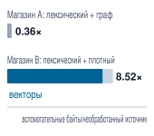
Плотные векторы увеличивают вспомогательные байты хранилища на порядок.
Инженерный расчёт 6.5: Почему два хранилища памяти различаются на порядок
Математика: Вспомогательные структуры хранилища A занимают 14.4 MB — коэффициент 0.36× над исходным кодом (полный коэффициент 1.36×). У хранилища B — 340.8 MB, из которых на одни лишь векторы приходится 307.2 MB, коэффициент 8.52× (полный 9.52×). После правки 15 файлов, при заданной пропускной способности обновления постингов и парсинга, хранилище A переиндексируется за 34.1 ms. Хранилищу B нужно заново встроить 30 чанков. При 50 чанков в секунду это займёт 612 ms.
Хранилище B несёт ~24× вспомогательных байтов хранилища A и требует ~18× больше времени на переиндексацию.
Системный вывод: Плотные векторы доминируют и по байтам, и по времени обслуживания, потому что каждый чанк превращается в сотни компонент с плавающей точкой, порождённых проходом модели. Сжатие векторов атакует байтовый член, а хранение в FP16 уменьшило бы векторные байты вдвое. Временной член атакуют лишь более быстрый энкодер или меньшее число повторно встраиваемых чанков; именно он задаёт окно устаревания после каждой правки. Поэтому временнóй коэффициент зависит от заданной пропускной способности энкодера и сокращается с её ростом, а байтовый коэффициент от неё не зависит. Плотный индекс оправдывает свой порядок величины лишь тогда, когда он повышает принятие задач настолько, чтобы окупить это обслуживание в стоимости на принятую задачу. Базовый вариант с живым источником из Глава 6.4 не платит ни по одному из этих членов — потому он и служит той базой сравнения, которую должен побить любой добавляемый индекс.
Глубину подгрузки следует измерять эмпирически независимо, потому что успех задачи не растёт монотонно с отсечкой поиска
↩︎ Полезный рабочий контекст, а также ограничивающие его размывание внимания и эффект потери в середине, введены в Полезный рабочий контекст.
Поэтому испытания на благоприятной нагрузке отображают многомерное пространство компромиссов, а не единственный скалярный балл бенчмарка. Более ёмкое хранилище памяти сохраняет полезный опыт редких случаев, но также накапливает устаревшие и противоречивые записи. Наоборот, строгий фильтр допуска защищает агента от ложных уроков ценой отбраковки ценного предметного контекста. Варьирование политик чтения и записи при одинаковых операционных бюджетах позволяет разделить, меняются ли исходы принятия задач из-за покрытия свидетельств, временнóй применимости, сопровождения жизненного цикла или вычислительных и дисковых издержек — прежде чем проверять, как те же политики ведут себя, когда извлекаемое содержимое активно враждебно.
6.10.4 Граничные испытания на противника
Косвенная промпт-инъекция, встроенная в загруженную страницу документации, может обмануть фонового воркера рефлексии так, что он сохранит несанкционированную директиву как постоянный урок проекта, где она переживёт саму недоверенную страницу задолго после её вытеснения из окна контекста (Greshake и др. 2023 г.). В изолированной песочнице оценки тестовые каркасы вводят синтетические учётные данные, прощупывают границы несанкционированных пространств имён и извлекают документы, заражённые косвенными промпт-инъекциями. Тестовый набор проверяет два слоя принуждения: перехватывает ли среда исполнения несанкционированные чтения и записи, и сохраняется ли враждебная полезная нагрузка в нижестоящих консолидированных сводках после отзыва исходного документа.
Оценивающие должны фиксировать как предлагаемые моделью действия, так и фактическую судьбу их исполнения средой. Протоколирование обеих стадий позволяет оценке отличить попытку нарушения безопасности от исполненной уязвимости. Политика памяти отвечает за записи, которые она допускает, индексирует и подгружает; подсистемы авторизации инструментов и среды исполнения отвечают за регулирование того, что агенту разрешено исполнять во внешнем окружении.
↪ Общий метод противника-оценки, развитый в Состязательная устойчивость и проверка атаками, задаёт испытание и возможности атакующего и измеряет успех атаки наряду с полезным завершением.
Контрольная точка 6.4: Свидетельства между сессиями
Предлагаемая политика памяти повышает показатели поиска на статическом снимке. Её авторы не проверяли обновления, удаление и исходы последующих задач.
6.11 Заблуждения и ловушки
Системы долговременной памяти отказывают, когда наделяют сохранённое представление большим операционным авторитетом, чем это оправдано его происхождением, или когда трактуют допуск при записи как постоянную гарантию валидности. Каждое из следующих заблуждений и ловушек — проектный обходной путь, порождающий тихую порчу состояния, скачки задержки или решения на устаревших свидетельствах, и большинство несёт издержки, которые один из ноутбуков главы количественно оценивает.
Заблуждение: Почти дублирующая запись не несёт новой информации.
Ревизия 10:00–11:00 на этапе допуска (Глава 6.8.2) — один случай из более широкого класса. Перевёрнутый флаг («уведомлять меня о сбоях» становится «не уведомлять меня о сбоях») и ограниченное по объёму исключение («никаких встреч до 11:00 по пятницам») тоже оказываются рядом с изменяемой записью в пространстве эмбеддингов. Но первая её отменяет, а вторая обязана сосуществовать с ней. Порог сходства отказывает на каждой по-своему: отбрасывает перевёрнутую запись как повтор и схлопывает исключение в общее правило, так что агент либо сохраняет запрещённое поведение, либо теряет более узкое ограничение. Высокая геометрическая близость не означает семантической эквивалентности. Конвейер допуска должен сначала установить идентичность сущности, охват, вид записи и явную семантику обновления. Геометрическое сходство должно дедуплицировать хранилище лишь после проверки, что новая запись не утверждает смены состояния и смены охвата.
Ловушка: Считать запись с высоким рангом актуальной.
Оценки векторного сходства показывают семантическую или тематическую близость к запросу, но ничего не говорят о временной свежести, транзакционной валидности или операционном авторитете. В трассе, открывающей Глава 6.9, устаревший фрагмент r17 из src/pool.py занимает первое место по запросу об уведомлениях. На шаге 13 агент потребил его без метки версии и заключил, что его собственное завершённое изменение потеряно. Он потратил следующие шаги на повторное внесение этого изменения, а затем на спекулятивные правки, отодвинувшие репозиторий от проверенного состояния. Согласованные проверки генерации предотвращают именно этот каскад. Фильтрация 50 кандидатов добавляет 1.5 μs локальной работы по просмотру метаданных в заданном сценарии, не считая стоимости долговечного согласования и резервных путей (ноутбук 6.4). Пока ранг индекса указывает лишь на релевантность кандидата, среда исполнения должна опираться на происхождение, метки версий, охват видимости и статус завершения, чтобы регулировать применение найденной записи.
Заблуждение: Подгрузка большего числа найденных записей даёт модели больше свидетельств.
Полнота@
Ловушка: Синхронная переиндексация при каждой записи ради актуальности индекса.
Пересчёт плотных эмбеддингов и перестроение индексных графов синхронно при каждой мутации вносят серьёзные задержки записи и узкие места по пропускной способности. При оговорённых затратах из ноутбука 6.4 синхронная переиндексация добавляет от 88 ms до 1.26 s блокирующей задержки к каждому изменению. Разделение исключения и перестроения выносит эту работу с пути записи. Локальные обновления исключений занимают 0.4 μs, а каждый последующий запрос добавляет 1.5 μs просмотров метаданных — не считая обычных затрат на долговременную фиксацию и координацию, а также резервного поиска. Заменяющие записи строятся в фоне. Блокировка ради свежих индексированных представлений всё же может быть полезна, когда зависимые запросы приходят внутри окна перестроения и прямой резервный поиск не может ответить на них в рамках бюджета.
Заблуждение: Каждому плотному хранилищу нужен приближённый индекс, потому что точный просмотр слишком медленный.
Плоские точные векторные просмотры масштабируются линейно по числу векторов-кандидатов, но одной пропускной способности памяти достаточно для существенных коллекций в жёстких бюджетах задержки. В ноутбуке 6.2 неиндексированный просмотр по 10,000,000 векторам имеет потоковый нижний предел 307.2 ms. Предварительное применение фильтра по арендатору или рабочему пространству сокращает набор кандидатов до 10,000 векторов, снижая потоковый предел до 0.31 ms. Бюджет запроса 10 ms даёт оптимистический потолок в ~326,000 векторов до учёта кодирования запроса, отбора top-
Ловушка: Оценка памяти на статическом снимке.
Бенчмаркинг подсистемы памяти на статическом снимке скрывает эксплуатационные затраты и режимы отказа, проявляющиеся при непрерывной мутации. Тесты на снимках игнорируют дрейф индекса, отставание синхронизации, накладные расходы на компакцию и аномалии устаревшего чтения. В ноутбуке 6.5 изменение 15 файлов оставляет плотное векторное хранилище без актуальных записей на 612 ms, против 34.1 ms для лексического и структурного хранилища. Каждый запрос в этом окне вынужден откатываться к прямому чтению или частичному результату. Статические тесты также пропускают состояния гонки — например, запаздывающий воркер, повторно публикующий устаревшее состояние, или явно удалённое пользовательское предпочтение, сохраняющееся внутри свёрнутого резюме. Оценивайте архитектуры памяти на динамических фиксаторах жизненного цикла (Глава 6.10), измеряя сквозное завершение задач, задержку синхронизации и амплификацию хранения на реалистичных нагрузках записи-чтения-удаления.
6.12 Итоги
Агенту по ремонту ПО нужно гораздо больше, чем индекс, сопоставляющий эмбеддинги текста с отчётом об ошибке. Надёжная долговременная память требует, чтобы система определяла, что представляет собой каждая сохранённая запись, какой авторитетный источник её поддерживает, как бюджет контекста ограничивает её попадание в последующие запросы и как меняется downstream-состояние при изменении этой опоры. Методы поиска находят кандидатов в рамках явного эксплуатационного контракта. Жизненный цикл записи определяет, какие записи доживают до статуса кандидатов. Всесторонняя оценка не позволяет инженерам принять улучшенный recall поиска за реальную производительность задач. Таблица 11 собирает количественные соотношения, управляющие системами долговременной памяти, связывая каждое вычислительное ограничение и эксплуатационный порог с системным решением, которое они информируют.
| Уравнение | Что ограничивает или решает | Где выведено |
|---|---|---|
| Лексический порядок ранжирования; насыщение ( |
Уравнение 1 | |
| Нижний предел времени точного просмотра |
Глава 6.6 | |
| Байты, затрагиваемые при оценке вектора в IVF-PQ; |
Уравнение 2 | |
| Порядок слитых кандидатов между методами, чьи оценки не имеют общей шкалы | Уравнение 3 | |
| Полные записи, помещающиеся в лимит поиска после резервирования вывода и конверта | Глава 6.3.3 | |
| Узлы в ограниченной окрестности обхода, сопоставляется с бюджетом полезной нагрузки | Глава 6.7 | |
| Может ли производная запись отвечать на запрос, требующий генерации |
Уравнение 4 | |
| Когда надгробные записи стоят столько памяти и recall, что запускается компакция | Глава 6.9 | |
| Качество поиска относительно заявленного релевантного набора: точность по запрошенному |
Уравнение 5 | |
| Окупаются ли добавленные затраты на поиск и сопровождение политики памяти принятыми задачами | Уравнение (2) |
Основные выводы: Постоянная информация требует жизненного цикла
- Записи сохраняют разные виды свидетельств: записи первичных источников, наблюдения агента, синтезированные уроки и поисковые индексы играют разные роли в цепочке свидетельств. Явные происхождение и область действия позволяют downstream-системам отличать эмпирический результат выполнения от спекулятивной гипотезы. Развёртывающие систему остаются строго ответственными, когда агрегированное резюме или производная эвристика противоречат своему исходному источнику записи.
- Результат поиска имеет контракт: границы области действия, контроль доступа, валидность версий, бюджеты полезной нагрузки и статус завершения определяют, что попадает в контекст промпта. Накладные расходы на форматирование конверта и поля метаданных расходуют лимиты токенов наряду с телами записей, напрямую ограничивая ёмкость кандидатов. Пустой ответ частичного или приближённого поиска не доказывает отсутствие. Такой вывод поддерживает лишь завершённый исчерпывающий поиск — в рамках его заявленной области действия и снимка.
- Стратегия поиска следует за информационной потребностью: поиск по ключу-значению, лексическое ранжирование, сходство плотных векторов и структурный обход графа отвечают разным требованиям поиска. Точный просмотр задаёт базовую полноту по выбранной метрике. Его предел по пропускной способности (
) отсекает неосуществимые просмотры, а измеренная задержка полного запроса определяет, укладывается ли он в бюджет поиска. Каждый вспомогательный векторный индекс или инвертированный список вносит постоянную амплификацию записи и накладные расходы на синхронизацию, которые окупаются лишь при измеримом приросте точности задач. - Отношениям нужны свидетельства и бюджет: явные рёбра графа соединяют разрозненные записи в связные многошаговые цепочки свидетельств. Поскольку окрестности кандидатов расширяются экспоненциально с глубиной обхода (
), поисковые конвейеры должны вводить строгие ограничения глубины и ветвления до оценки узлов. Пути обхода указывают топологическую достижимость, а не верифицированные трассы реального исполнения, поэтому агент должен считать обнаруженные пути структурными гипотезами, требующими независимого подтверждения. - Память должна меняться вместе со своей опорой: политики обновления, замещения, истечения срока жизни (time-to-live) и удаления определяют, остаётся ли запись допустимой для будущих промптов. Изменение или вытеснение первичной записи инвалидирует все downstream-резюме, эмбеддинги и инвертированные списки. Записи, описывающие пользователя, несут согласие и срок хранения, при которых были приняты, а отозванное согласие или истёкший срок запускают ту же процедуру удаления, что и явный запрос. Кажущиеся почти дубликатами записи нередко представляют критические реальные мутации состояния, а не избыточный текст. Кроме того, частый доступ на чтение указывает на частое использование, но объём чтений сам по себе не подтверждает актуальную фактическую точность сохранённого состояния.
- Исключение и перестроение требуют разной работы: в оговорённом сценарии локальные поиски исключений занимают микросекунды, а переиндексация замены — миллисекунды и секунды. Затраты на долговременную координацию и резервный поиск остаются отдельными. Разделение инвалидации и фоновой переиндексации через учитывающие версии окна видимости (
) защищает читателей от устаревшего состояния, пока асинхронные конвейеры сопровождения сходятся. - Оценивайте политики памяти на многосессионных жизненных циклах: офлайн-бенчмарки ранжирования выявляют точность поиска кандидатов, но многосессионные оценки показывают, как агенты накапливают диагностические ошибки или устаревший контекст со временем. Сравнивайте конкурирующие архитектуры памяти по сквозному проценту завершения задач (
), соблюдению контрактов жизненного цикла и амортизированной стоимости на принятую задачу ( ), используя изолированные метрики поиска в первую очередь для диагностики локальных режимов отказа.
Авторитет всегда принадлежит источнику записи (принцип «Полномочия остаются у источника»). Поэтому поиск действует как исполнимый контракт, управляющий областью действия, свежестью и лимитами контекста, а не как ничем не ограниченный поиск по сходству; обнаружение записи-кандидата не даёт права некритично внедрять её в downstream-исполнение. Жизненный цикл записи распространяет эту дисциплину на все производные артефакты, которые агенты создают между сессиями, включая резюме, сущности графа, векторные эмбеддинги и кэшированные уроки. Каждое преобразование должно сохранять явное происхождение, граничные условия и неопределённость исходных свидетельств, а не молча превращать предварительные диагностические догадки в прочные факты.
6.13 Историческая перспектива и дополнительное чтение
Задолго до того как цифровые компьютеры обрели способность хранить обширные текстовые коллекции, исследователи осознали, что поиск нужной записи среди многих — задача отбора, а не хранения. В своей влиятельной концепции мемекса Bush (1945 г.) представил устройство размером с письменный стол, вмещающее книги, записи и переписку человека и позволяющее выстраивать ассоциативные тропы между связанными элементами. Буш заметил, что человеческая память работает по ассоциации, а не через формальное индексирование, и видел главную инженерную трудность в отборе, а не в физической ёмкости хранения. За последующие полвека классический информационный поиск превратил отбор в математическое измерение. Salton и др. (1975 г.) формализовал документы и запросы как векторы весов терминов, ранжируемые по геометрическому сходству в общем векторном пространстве. Spärck Jones (1972 г.) дала статистический фундамент обратной частоты документа, показав, что редкие термины обладают куда большей различительной силой, чем частые. Развивая вероятностные модели релевантности, аппроксимации Robertson и Walker (1994 г.) вылились в BM25, который остаётся прочной лексической базовой линией ранжирования в современных поисковых системах. Чтобы сделать такие ранжирования практичными на больших коллекциях в жёстких бюджетах задержки, поисковые системы обратились к инвертированным файлам — спискам постингов, оптимизированным под компактное сжатие и быстрое пересечение (Zobel и Moffat 2006 г.). Лексическому сопоставлению, однако, неизбежно противостояла проблема несовпадения словарей: пользователи и авторы описывают одни и те же понятия разными словами (Furnas и др. 1987 г.), — препятствие, которое в итоге потребовало обучаемых семантических представлений.
Вторая линия пришла из баз данных и распределённых систем, которые задолго до противостояния поисковых систем изменяемому состоянию решали половину задачи о сопровождении. Поскольку поисковый индекс агента действует как производное представление над эволюционирующими журналами исполнения и внешними средами, он наследует классические обязательства сопровождения баз данных. Инкрементальное сопровождение представлений установило формальные методы, позволяющие держать производную таблицу согласованной с мутирующими базовыми отношениями без полного пересчёта представления с нуля (Blakeley и др. 1986 г.; Gupta и Mumick 1995 г.). Чтобы координировать конкурентные записи без ограничительных блокировок, оптимистическое управление конкурентностью обусловливало обновления проверками по прочитанным наборам (Kung и Robinson 1981 г.). В распределённых системах со слабо согласованными репликами алгоритмы эпидемической репликации показали, что удаления должны оставлять явные надгробные маркеры: без них запаздывающие узлы трактуют отсутствие записи как недостающие данные и воскрешают удалённый элемент (Demers и др. 1987 г.). Аналогично гарантии сессий формализовали точные ожидания согласованности — такие как «чтение своих записей» и монотонные чтения, — которые клиенты требуют при опросе запаздывающих реплик (Terry и др. 1994 г.). На уровне хранения log-structured merge-tree превратил журнал с последовательной записью и отложенную компакцию замещённых записей в важнейший системный паттерн (O’Neil и др. 1996 г.). Каждый из этих механизмов вновь возникает в архитектурах памяти агентов, поскольку поисковый индекс — это ранжированное материализованное представление над изменяемой историей и одновременно поисковая структура.
Обучаемый поиск соединил обе линии. Геометрические ослабления, такие как locality-sensitive hashing, первоначально возникли, чтобы помочь поиску приближённых ближайших соседей избежать проклятия размерности (Indyk и Motwani 1998 г.). Вслед за этим произведенная квантизация (Jégou и др. 2011 г.) и навигационные графы близости (Malkov и Yashunin 2018 г.) сделали суб-линейный векторный поиск практичным в масштабе миллиардов эмбеддингов (Johnson и др. 2019 г.). Параллельно архитектуры глубокого обучения начали включать явные компоненты памяти. Сети памяти дали нейронным моделям отдельное адресуемое хранилище для чтения и записи вне весов параметров (Weston и др. 2015 г.). Открытый вопросно-ответный поиск затем соединил обучаемые нейронные поисковики с моделями чтения и понимания (Chen и др. 2017 г.), а плотный поиск пассажей (Karpukhin и др. 2020 г.) вместе с генерацией, дополненной поиском (Lewis и др. 2020 г.), сделал поисковик сквозным обучаемым компонентом генерации текста. Архитектуры агентов развили этот замысел, превратив хранилище памяти в активное рабочее пространство, куда модели не только читают, но и пишут. Системы ввели чередующиеся следы поиска и рассуждения (Yao и др. 2023 г.), вдохновлённую операционными системами виртуальную подкачку контекста (Packer и др. 2023 г.), вербализованные само-рефлексии для исправления прошлых неудач (Shinn и др. 2023 г.) и непрерывные потоки наблюдений, периодически консолидируемые в более высокоуровневые рефлексии (Park и др. 2023 г.). Из этих соединённых линий агентные системы наследуют инженерное обязательство, которое развивает эта глава. Запись памяти агента надёжна ровно настолько, насколько явно гарантированы её происхождение, валидность версии и эксплуатационная область действия.
Следующие основополагающие работы заслуживают глубокого изучения в примерном хронологическом порядке:
- Bush (1945 г.) выстраивает управление личными знаниями вокруг ассоциативных троп и избирательного поиска, показывая, что центральная задача памяти агента — извлечение релевантного контекста из обширного хранилища — старше цифровых вычислений.
- Robertson и Zaragoza (2009 г.) даёт ретроспективу авторов о вероятностной модели релевантности за BM25 с ясным объяснением, почему насыщение терминов и нормализация длины документа принимают свои конкретные математические формы.
- Zobel и Moffat (2006 г.) обозревает построение инвертированных файлов, сжатие постингов и быстрое вычисление запросов top-
, описывая системную инженерию, лежащую в основе любого производственного лексического индекса. - Terry и др. (1994 г.) формализует четыре клиентские гарантии сессии в нескольких компактных страницах. Прочтите вместе с Глава 6.9: они точно проясняют, какие гарантии должен обеспечивать шлюз поиска при управлении асинхронными обновлениями памяти.
- Jégou и др. (2011 г.) и Malkov и Yashunin (2018 г.) устанавливают два доминирующих архитектурных паттерна современного векторного индексирования. Первый детализирует произведенную квантизацию для агрессивного сжатия векторов и быстрого асимметричного вычисления расстояний, второй вводит иерархические навигационные малые миры (HNSW) для суб-линейной маршрутизации по близости. Оба дают строгий анализ того, чем каждая аппроксимация жертвует между полнотой и задержкой запроса.
- Park и др. (2023 г.) представляет сквозную архитектуру памяти для автономных агентов, сочетающую непрерывные потоки наблюдений, многофакторное оценивание (свежесть, важность, релевантность) и периодическую иерархическую рефлексию. Она служит конкретным ориентиром, по которому можно оценивать типы записей и контракты жизненного цикла этой главы.
6.14 Упражнения
Каждая величина ниже — гипотетическое данное, выбранное для круглой арифметики, а не измерение какой-либо системы. Каждая задача завершается решением; укажите решение и число, которое его обосновывает.
1. Сериализация меньшего вызова (базовый уровень). Вызов допускает 16 384 токена. Среда исполнения резервирует 1 024 под вывод, а весь остальной сериализованный ввод занимает 11 264. Конверт результата стоит 96 токенов, а каждая найденная запись несёт тело в 300 токенов и 60 токенов метаданных источника, версии и происхождения.
- Сколько полных записей помещается и сколько токенов остаётся?
- Сколько записей допустил бы лимит поиска, учитывающий только тела, и насколько их сериализация превысила бы лимит?
- Владелец задачи хочет подготовить 13 записей. Метаданные нельзя отбросить, ведь именно метки версий позволяют модели отличить
r17отr18. Каков максимальный фрагмент тела на запись, удовлетворяющий запросу? - Ещё два результата инструментов, добавляющие 512 токенов прочего ввода, приходят перед вызовом. Сколько полных записей помещается теперь, и какое резервирование среда исполнения должна пересчитать перед отправкой?
2. Где точный просмотр перестаёт окупаться (базовый уровень). Хранилище арендатора содержит
- Вычислите байты, флопсы и арифметическую интенсивность одного точного сканирования и сравните эту интенсивность с гребневой точкой хоста.
- Чему равен нижний предел пропускной способности для одного полного сканирования и какой оптимистичный потолок числа подходящих векторов задаёт этот предел в рамках бюджета?
- Фильтр области действия ограничивает большинство запросов одним проектом из 150 000 векторов. Исключает ли нижний предел пропускной способности точное сканирование, и какое измерение позволит решить, укладывается ли оно в бюджет поиска?
- Позволит ли хранение полного корпуса в INT8 уложить нижний предел пропускной способности нефильтрованного точного сканирования в бюджет?
3. Что даёт согласование списков (базовый уровень). Лексический поиск возвращает P, Q, R, S именно в таком порядке, а плотный поиск — S, T, P, U. Каждый кандидат полностью принадлежит одному снимку r18, ничьи разрешаются по идентификатору кандидата, а среда исполнения ставит в очередь три записи.
- При
вычислите каждое агрегированное значение по Уравнение 3 и поставленному в очередь набору. - Найдите наибольший ранг
, при котором кандидат, занимающий ранг в обоих списках, всё ещё набирает больше очков, чем кандидат на ранге 1 только в одном списке, для и для . - Кандидат Q — это воспроизводящий тест, который должен прочитать агент. Существует ли положительное значение
, при котором Q обходит P? Как Q попадает в поставленный в очередь набор при , и что среде исполнения следует делать вместо того, чтобы полагаться на это?
4. Сколько весит упоминание задачи (средний уровень). Передайте выбор политики поиска (Глава 6.4) исследовательскому агенту, чьё хранилище содержит заметки, дистиллированные из загруженных страниц. Каждый раунд модели занимает 4 с, а операции поиска настолько быстры, что ими можно пренебречь. Каждая заметка сериализуется в 600 токенов вместе с метаданными, лимит на поиск составляет 6 144 токенов, и всё найденное остаётся в контексте до получения ответа. Доступны три политики. Прямое чтение ставит в очередь ровно те записи, которые названы в задаче, без дополнительного раунда. Предварительное размещение ставит в очередь 8 лучших по рангу заметок перед первым вызовом; когда в этом наборе нет нужных свидетельств, модель переходит к прощупыванию недостающего. Управляемое моделью прощупывание стоит один раунд модели и возвращает 2 заметки. Каждая политика завершается одним раундом ответа. Поступают три задачи:
- R1: «Согласуйте закреплённые заметки
n-4412иn-4413.» Свидетельства — это две эти заметки. Предварительное размещение захватывает обе с вероятностью 0,9, а промах стоит один раунд прощупывания. Управляемый поиск требует один раунд прощупывания. - R2: «Что установила более ранняя работа в этом проекте о деградации батареи при быстрой зарядке?» Свидетельства — три неназванные заметки. Предварительное размещение захватывает все три с вероятностью 0,8, а промах стоит один раунд прощупывания. Управляемый поиск требует два раунда прощупывания.
- R3: «Проследите, откуда взялась цифра 40 процентов в
n-4412.» Свидетельства —n-4412и ещё три заметки, каждая из которых находится только по цитате в предыдущей. Предварительное размещение включаетn-4412, но захватывает всю цепочку с вероятностью 0,1, а промах стоит три зависимых раунда прощупывания. Управляемый поиск требует четыре зависимых раунда прощупывания.
- Для R1 вычислите ожидаемую задержку и число поставленных в очередь токенов для каждой политики. Какая политика выигрывает и что добавляет предварительное размещение такого, что связывающее ограничение исследовательского агента делает дорогим?
- Для R2 сравните предварительное размещение с управляемым поиском по ожидаемой задержке, ожидаемому числу токенов в очереди и худшему случаю токенов в очереди относительно лимита. Что должна выбрать среда исполнения?
- Для R3 вычислите те же величины для предварительного размещения и для управляемого поиска. Почему меньшая ожидаемая задержка предварительного размещения не является основанием выбирать его?
- Спроектируйте для R3 политику, комбинирующую две из трёх, и вычислите её задержку и число токенов в очереди. Сформулируйте правило выбора, которое иллюстрируют три задачи, и назовите свойство возвращённой записи, которое остаётся неизменным независимо от того, какая политика её нашла.
5. Укладка индекса в память (средний уровень). Исследовательское хранилище содержит
- Какие конструкции укладываются в бюджет памяти? Вычислите резидентные байты каждой.
- Для IVF-PQ укажите размерность подвектора, размер таблицы поиска на запрос с элементами FP32 и коэффициент сжатия относительно векторов FP16.
- При
и равномерно заполненных ячейках, сколько байтов кодов сканирует один запрос, и как это сравнивается с байтами, прочитанными при сравнении запроса с каждым грубым центроидом? О какой следующей оптимизации говорит это сравнение? - Пересчёт в полной точности короткого списка из 100 кандидатов читает векторы из вторичного хранилища. Сколько байтов он загружает, какую точность расстояний восстанавливает и какие пропуски на верхних уровнях не может исправить?
6. Синхронное переиндексирование в сессии ремонта (средний уровень). Каждая правка в сессии ремонта меняет 5 файлов и 15 индексированных фрагментов. Заданные стоимости: 4 мс на разбор файла, 2 мс на обновление постингов одного фрагмента, 40 мс на локальный батч эмбеддингов до 8 фрагментов, 150 мс на батч на удалённом сервисе, 50 нс на локальное обновление набора исключений в памяти для одного файла и 30 нс на локальный поиск среди одного из 40 кандидатов на запрос. Все стратегии разделяют границу долговременного коммита источника и координации, стоимости которых, как и стоимости резервного поиска, исключены. Фоновая пересборка начинается сразу после этого коммита и выполняет заданные этапы последовательно, без очередей. Сессия выполняет 60 правок, а следующий зависимый запрос модели приходит через 2 с после каждого коммита источника.
- Сколько времени на пути записи добавляет синхронное переиндексирование на правку с локальным сервисом, с удалённым сервисом и за всю сессию?
- Какую локальную работу с метаданными добавляет исключение на запись и на запрос, и каких стоимостей нет в этом сравнении?
- При фоновой переиндексации с исключением обслуживается ли какой-либо зависимый запрос, пока отсутствуют заменяющие записи?
- Новая среда исполнения выполняет автоматический проверочный поиск через 50 мс после каждого коммита источника. Какие запросы теперь попадают в интервал пересборки, что возвращает им слой поиска и оправдывает ли это синхронное переиндексирование?
7. Сроки удаления в хранилище поддержки (средний уровень). Передайте анализ инвалидации агенту поддержки. Его хранилище содержит 80 000 000 векторов памяти под графом HNSW, удерживаемое постоянного размера, потому что вставки уравновешивают удаления. Ежедневно 2 000 клиентов запрашивают полное удаление своих 40 записей каждый, а 20 000 клиентов заменяют одну настройку, оставляя надгробие на её старом векторе. Компакция срабатывает при
- Через сколько дней сработает триггер
и чему равно к моменту наступления срока хранения? Какое ограничение задаёт график компакции? - Сколько длится одна компакция и насколько велик набор исключений непосредственно перед ней?
- Каждая заменённая настройка также фигурирует в двух итоговых сообщениях сессии примерно по 1 000 токенов каждое. Сколько токенов итогов в день стоила бы регенерация, и какая более дешёвая обработка разрешена жизненным циклом записи для итога, который имеет лишь историческое значение?
- Связывающей опасностью агента ремонта являются его собственные правки, делающие индексированные копии устаревшими. Назовите связывающую опасность агента поддержки и механизм из этой главы, который её закрывает.
8. Типизированные рёбра как управление бюджетом (средний уровень). Структурный граф вокруг затравочной функции имеет в среднем 4 исходящих ребра вызова и 10 рёбер импорта на узел. Лимит на поиск составляет 8 192 токена, запись каждого узла сериализуется в 200 токенов, а рёбра вместе с конвертом занимают 150 токенов. Считайте окрестность точным деревом без повторяющихся узлов.
- До какой глубины вписывается обход, ограниченный рёбрами вызова, и до какой глубины — обход, следующий также по импортам?
- Каково максимальное число полных узлов, которое вмещает лимит?
- Смогло бы сокращение записи узла до 120 токенов позволить вписать обход глубины 3 только по вызовам? Какая запись узла была бы наибольшей подходящей?
- Почему счёт для точного дерева завышает размер поставленного в очередь набора для реального графа репозитория, и почему это не повод отказываться от ограничения глубины?
9. Окупается ли плотный индекс? (продвинутый уровень). Две политики памяти обслуживают одну и ту же рабочую нагрузку ремонта с одной попыткой на задачу. Политика L — лексический плюс структурный поиск — принимает 55 процентов задач при $0,80 за попытку. Политика D добавляет плотный поиск, принимает 62 процента и ставит в очередь больше свидетельств, поднимая стоимость попытки до $0,84. Она также переэмбеддирует 20 фрагментов на каждую из 6 правок за задачу по $0,0005 за фрагмент и несёт $0,01 за задачу амортизированного векторного хранения. Её энкодер обрабатывает 50 фрагментов в секунду.
- Вычислите
для обеих политик по Уравнение (2). Какая дешевле на принятую задачу? - Какой доли принятия должна достичь политика D, чтобы сравняться с политикой L?
- На сколько каждая правка оставляет плотный индекс без актуальных записей, и что должен делать слой поиска для запросов в этом окне?
- Поставщик энкодера политики D сообщает, что Recall@10 вырос с 0,60 до 0,80 на статическом снимке. Критикуйте это утверждение как свидетельство в пользу принятия политики D и спроектируйте испытание, которое решит вопрос.
10. Переработка схемы свежести (продвинутый уровень). Команда предлагает поддерживать индекс ремонта в актуальном состоянии с помощью флага «грязного» файла, который устанавливается при коммите правки и сбрасывается при завершении пересборки, плюс пятиминутного предела возраста, отсчитываемого от фиксации источника воркером. По истечении срока запись сразу становится неподходящей и ставится в очередь на переиндексацию; пока замена не появилась, шлюз возвращает неполный результат. Каждая реплика применяет каждое обновление первичного узла ровно через 2 с после его коммита там, а публикация заменяет текущие записи файла. Рассмотрим одну хронологию. При src/pool.py на r17 и начинает его индексацию. При r18, и флаг устанавливается. При r18 и сбрасывает флаг. При r17. Никакая другая публикация не происходит до истечения срока записей W1. Агент запрашивает файл каждые 3 с начиная с
- Не учитывая реплики, при этом предложении как долго записи
r17выдаются как актуальные, и сколько запросов агента могут их получить? - Назначьте интервалы поколений записям
r17иr18и примените Уравнение 4 с= r18. Какие записи допускаются и что должна проверять публикация W1? - Запрос, выпущенный при
с, попадает на реплику, несущую номер последовательности в журнале коммита r18. По правилу чтения собственных записей сравните границы ожидания 0,5 с и 1,5 с по добавленной задержке и по возвращённым свидетельствам. - Запишите переработанный протокол не более чем пятью правилами и укажите, какая часть предложения, если таковая есть, выживает.
Дальнейшие шаги: От политики памяти к исполнению инструментов
использованная литература
Сноски
BM25 (Best Match 25): название фиксирует одну весовую функцию из серии «Best Match» поисковой системы Okapi, построенной на простых приближениях к двух-пуассоновской модели встречаемости термов, выведенной Robertson и Walker (1994 г.). Формула пережила десятилетия обученных ранжировщиков, потому что не требует обучающих данных — лишь статистику корпуса, которую индекс и так хранит, — и потому она остаётся базовой линией, которую агент для репозитория может развернуть в день создания своего рабочего пространства. ↩ Вернуться к тексту
Обратная документная частота (IDF): в работе Spärck Jones (1972 г.) предложено взвешивать термин по тому, в скольком немногих документах он встречается, исходя из аргумента, что термин, разделяемый большинством документов, не может их различить. В репозитории этот аргумент благоприятствует именно тем токенам, которые ищет агент, — например уникальному имени теста или строке ошибки, — и занижает ключевые слова, общие для всех файлов; поэтому редкий идентификатор резко поднимается в ранжировании BM25, тогда как расплывчатое описание симптома — нет. ↩ Вернуться к тексту
Выбор путей доступа по стоимости: оптимизатор System R выбирал между индексными сканированиями, последовательными сканированиями и порядками соединения, оценивая селективность каждого предиката и число страниц, которых коснулся бы каждый план (Selinger и др. 1979 г.). Шлюз поиска решает ту же задачу оценки, где фильтр области играет роль предиката, а список вхождений или векторный индекс — путь доступа; неверная оценка оборачивается либо сканированием всего корпуса, либо пустым результатом, похожим на отсутствие совпадений. ↩ Вернуться к тексту
Векторная модель пространства: ранжирование документов по углу между вектором запроса и вектором каждого документа предшествует обученным энкодерам; Salton и др. (1975 г.) представлял каждый документ вектором весов термов и оценивал его по косинусному сходству. Плотный поиск сохраняет геометрию и заменяет разреженные, интерпретируемые веса термов обученными компонентами — именно это позволяет ему перекинуть мост через несовпадение словарей, но и именно поэтому ни один отдельный компонент не объясняет совпадение. ↩ Вернуться к тексту
Приближённые ближайшие соседи: точные структуры ближайших соседей, хорошо работающие в двух или трёх измерениях, с ростом размерности деградируют до полного прохода — проклятие размерности. Indyk и Motwani (1998 г.) ослабил задачу до возврата точки в пределах некоторого множителя от истинного ближайшего расстояния и показал посредством хеширования, чувствительного к локальности, что это ослабление допускает сублинейное время запроса. Каждый ANN-индекс, которым пользуется агент, заключает тот же компромисс, поэтому его промахи — часть контракта, измеряемая полнотой (recall), а не дефект, который можно устранить настройкой. ↩ Вернуться к тексту
Монотонность оценки RRF: при фиксированном
перемещение элемента с ранга на в одном входном списке увеличивает его вклад на (Cormack и др. 2009 г.). Если его вклады из других списков не уменьшаются, его суммарная оценка растёт. Это свойство оценки элемента, а не гарантия улучшения итогового ранга, когда меняются и другие кандидаты, и не гарантия релевантности свидетельства.↩ Вернуться к тексту Обнаружение сообществ: GraphRAG разбивает граф сущностей алгоритмом Лёйдена, который уточняет кластеризацию на основе модулярности, чтобы каждое обнаруженное сообщество было хорошо отделено и внутренне связно (Traag и др. 2019 г.). Оптимизация модулярности поощряет группы с большей плотностью внутренних рёбер, чем у эквивалентной случайной сети. Обнаруженное сообщество отражает плотность совместной встречаемости сущностей в извлечённых корпусах; соответствует ли этот топологический кластер логической границе модуля, признанной сопровождающими системы, нужно проверять по фактической исходной архитектуре. ↩ Вернуться к тексту
Свидетельства о смерти: распределённые реплицированные базы данных столкнулись с этой проблемой десятилетия назад. Если реплика молча удаляет запись, отложенное обновление, приходящее от изолированного пира, выглядит как свежие данные и воскрешает удалённую запись. Demers и др. (1987 г.) решил это в эпидемической репликации записью явного «свидетельства о смерти», которое распространяется по кластеру и замещает более старые версии. В архитектуре памяти агента отстающие асинхронные индексаторы, очереди конвейеров и восстановленные снимки действуют точно как устаревшие реплики, делая долговременные маркеры-надгробия необходимыми до физического удаления. ↩ Вернуться к тексту
Session Guarantees: Проект Bayou установил четыре основополагающих клиент-центричных гарантии для слабо согласованного распределённого хранилища: чтение собственных записей, монотонные чтения, записи следуют за чтениями и монотонные записи (Terry и др. 1994 г.). Агентной системе требуется больше, чем простое чтение собственных записей. Например, если агент читает
r18с актуальной реплики, а на следующем шаге извлекаетr17с отстающего узла, система нарушает монотонные чтения, и представление агента об истории рабочего пространства движется назад. ↩ Вернуться к тексту